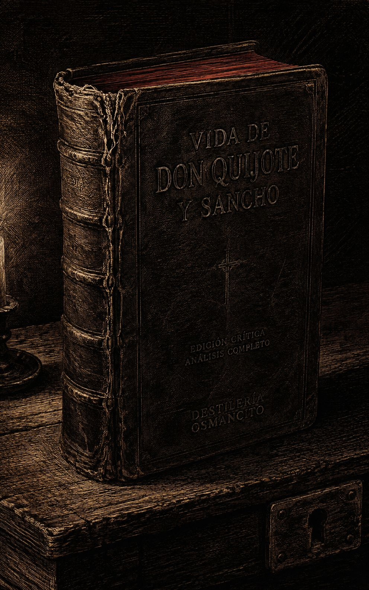
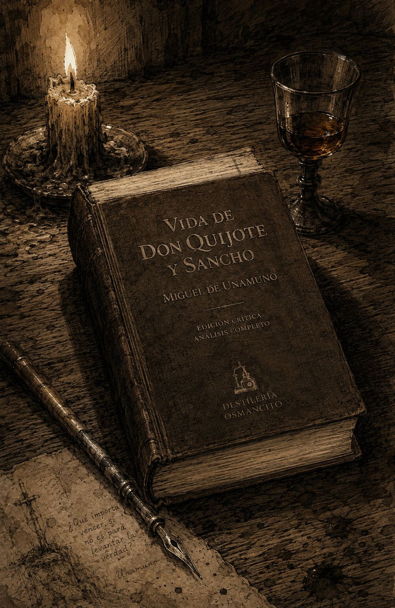
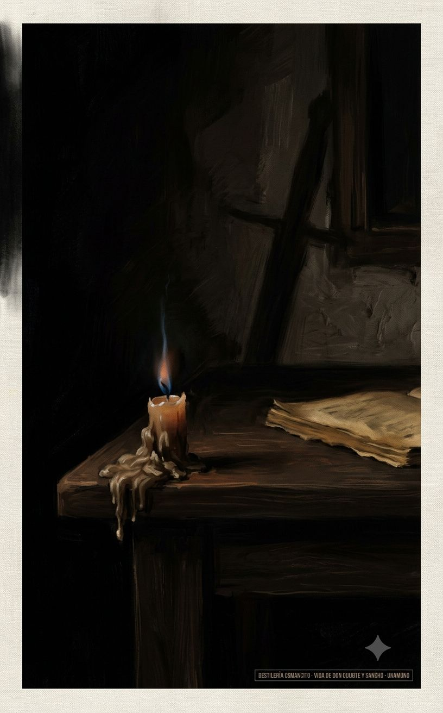
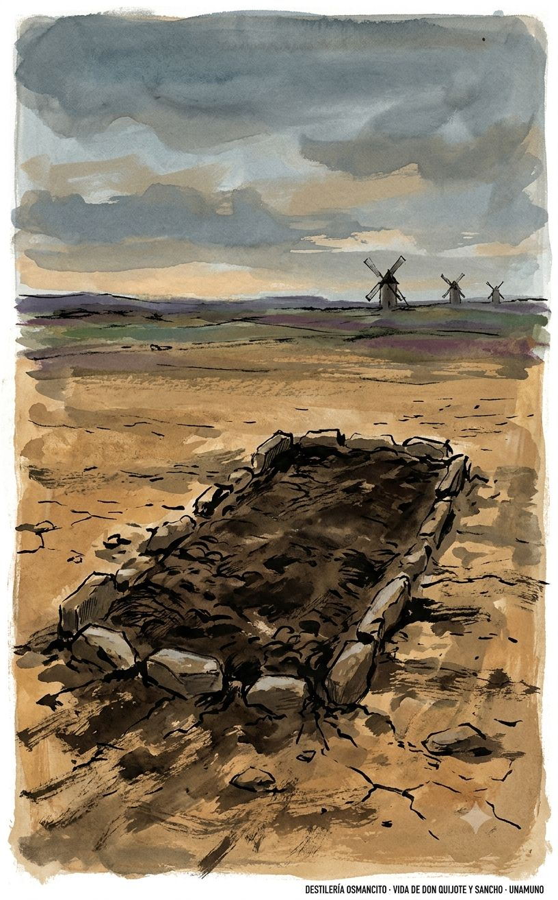
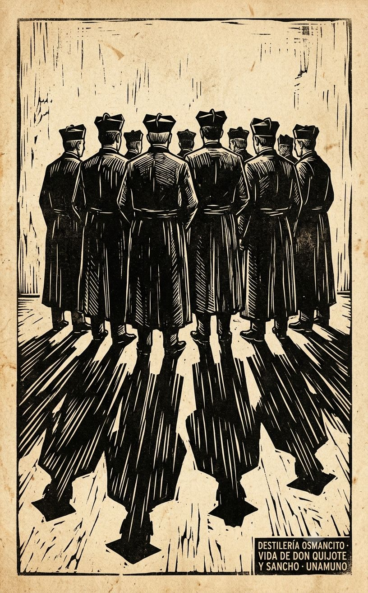

Este corpus no pesa como novela — pesa como vigilia. Es un hombre solo hablándole a un muerto que se niega a estarlo, en 1905, con la sequedad castellana de quien ha decidido que comprender es una forma de traición. Hay fiebre mística bajo la prosa árida: sepulcro, soledad absoluta, la locura como la única cordura posible frente a “bachilleres, curas y barberos” que todo lo explican y así lo matan. El ritmo es de sermón y de insomnio —frases largas que se enroscan hacia la desesperación, luego cortan en seco. Textura de pergamino viejo y polvo secular, pero también de vela consumida a medianoche. No es un libro sobre el Quijote: es una exhumación. Un hombre cavando en un texto ajeno para encontrarse a sí mismo, y encontrando en cambio la muerte, la fe, y la terquedad de seguir soñando aunque el sueño sea mentira. Paleta que esto pide: ocres quemados, sepia, negro de tinta vieja, algún rojo oscuro de sangre seca o cera —nunca colores vivos, nunca luz de mediodía.
Exhumación Encuadernada





Unamuno no comenta el Quijote: lo secuestra. Declara, sin pudor, que entiende a Don Quijote mejor que Cervantes, que Cervantes traicionó a su propio personaje al reírse de él, y que la tarea de este libro es rescatar al caballero de manos de “bachilleres, curas, barberos, duques y canónigos” —es decir, de la razón misma. Lo que queda después de cerrar el libro no es una interpretación del Quijote: es la sospecha incómoda de que la locura con fe puede ser más verdadera que la cordura sin ella, y de que uno mismo, el lector, quizá lleve dentro un Sancho todavía sin quijotizar.
Pesa como un misal usado durante años por la misma mano: cubierta oscura, cantos gastados, y algo en el tacto que ya avisa que no se lee de corrido, sino que se abre por donde el dedo cae.
Este no es un libro sobre el Quijote. Es un hombre solo, en 1905, hablándole a un muerto que se niega a estarlo, y usando el texto de Cervantes como excusa y como arma. Nombrar lo que es este corpus —una exégesis mística, un acto de fe disfrazado de crítica literaria— es distinto de resumir lo que dice, porque lo que dice cambia de capítulo en capítulo, pero lo que es no cambia nunca: una vigilia.
Título — Vida de Don Quijote y Sancho
Autor — Miguel de Unamuno
Año — 1905 (primera edición); esta edición corresponde al prólogo de la segunda edición, fechado en Salamanca, Enero de 1913
Género — Ensayo filosófico-místico organizado como comentario capítulo a capítulo de la novela de Cervantes; roza la novela por momentos, cuando el propio Unamuno se convierte en personaje que dialoga con un amigo epistolar
Extensión estimada — Aproximadamente 105.000 palabras, unas 420 páginas (a 250 palabras por página), distribuidas en 89 unidades: un prólogo, dos ensayos-marco (“El sepulcro de Don Quijote” al inicio y al final), 83 capítulos o grupos de capítulos que siguen el orden de la Primera y Segunda Parte del Quijote, y un breve vocabulario final
Idioma original — Español
Palabra más frecuente con contenido — Quijote (785 apariciones). Coincide exactamente con lo que el corpus declara ser: no un comentario sobre una novela, sino una convocatoria alrededor de un nombre propio convertido en categoría espiritual.
Unamuno recorre capítulo por capítulo las dos partes del Quijote cervantino, pero no para explicarlo: para disputárselo a Cervantes. Sostiene que Don Quijote es más grande que su autor, que Sancho se le impuso al propio Cervantes a su pesar, y que la locura del hidalgo —su fe ciega, su desprecio del sentido común, su fidelidad a Dulcinea— es una forma superior de verdad frente a la “cochina lógica” de curas, bachilleres y canónigos. El libro se abre y se cierra con un ensayo epistolar, “El sepulcro de Don Quijote”, en el que Unamuno increpa a un amigo sobre la necesidad de una cruzada espiritual para rescatar a España de su ramplonería. Entre medio, cada capítulo cervantino se convierte en pretexto para una glosa sobre la fe, la muerte, la inmortalidad, el quijotismo como religión y el sanchopancismo como tentación permanente del alma.
Don Quijote — el hidalgo manchego, aquí elevado por Unamuno a la categoría de Caballero de la Fe y de la Locura; su historia se sigue pero se subordina siempre a su significado.
Sancho Panza — el escudero, leído por Unamuno no como contrapunto cómico sino como un hombre que se va “quijotizando” progresivamente hasta hacerse indistinguible en espíritu de su amo.
Dulcinea del Toboso — figura casi mariana en la lectura de Unamuno: el objeto de una fe amorosa que no necesita verificación empírica.
El bachiller Sansón Carrasco — encarnación del sentido común burlón, antagonista intelectual de Don Quijote.
El cura y el barbero — representantes de la razón institucional que persigue “curar” a Don Quijote de su locura.
El canónigo (capítulos finales de la Primera Parte) — voz de la sesudez razonadora con quien Don Quijote discute largamente sobre la verdad de los libros de caballerías.
Los Duques (Segunda Parte) — orquestan burlas elaboradas contra Don Quijote y Sancho, incluida la aventura de Clavileño y el gobierno ficticio de la ínsula Barataria.
El amigo epistolar sin nombre — interlocutor de Unamuno en los dos ensayos “El sepulcro de Don Quijote”; recibe las cartas-sermón que enmarcan todo el libro.
Miguel de Unamuno — no es solo autor sino personaje activo del corpus: interpela al lector, discute con Cervantes, cita a Santa Teresa, Kierkegaard, Ibsen, Góngora, y convierte cada capítulo en ocasión de examen espiritual propio.
El libro se abre con un prólogo (1913) en el que Unamuno explica el origen de la obra: publicada en 1905, coincidiendo por azar con el tercer centenario del Quijote, y declara su método —una exégesis “mística” y personal, no erudita, que se permite discrepar de Cervantes y afirma comprender a los personajes mejor que su creador. Le sigue el primer ensayo “El sepulcro de Don Quijote” (1906), una carta a un amigo sin nombre en la que Unamuno lamenta la ramplonería de la España contemporánea, la incapacidad colectiva de comprender la locura noble, y propone una “cruzada” para rescatar el sepulcro de Don Quijote de manos de sus custodios racionalistas —bachilleres, curas, barberos, duques, canónigos—, cruzada cuyo destino final es la muerte de quien la emprenda.
A partir de ahí, el cuerpo central sigue el orden de la novela cervantina. En la Primera Parte: la salida inicial de Don Quijote, su armado como caballero por un ventero, el episodio de los molinos de viento (leído por Unamuno como alegoría del miedo ante la mecanización moderna), el encuentro con el vizcaíno, la incorporación de Sancho como escudero tras prometerle una ínsula, la aventura de los batanes, la conquista del yelmo de Mambrino, la liberación de los galeotes (que se vuelven contra su libertador), la penitencia en Sierra Morena por amor a Dulcinea, el reencuentro con Cardenio y Dorotea, el ardid del cura y el barbero para llevar a Don Quijote de regreso enjaulado a su aldea, y los debates de Don Quijote con un canónigo sobre la verdad de los libros de caballerías, discusión que Unamuno usa para tender un paralelo entre la fe caballeresca y la fe religiosa. La Primera Parte cierra con el regreso de Don Quijote enjaulado a su pueblo, un domingo a mediodía, entre burla y chacota, mientras Sancho vuelve con la fe en las caballerías ya arraigada.
La Segunda Parte comienza con Don Quijote convaleciente en su casa, presionado por el cura, el barbero, el ama y la sobrina para que abandone su locura; entra en escena el bachiller Sansón Carrasco, que se ofrecerá más tarde como falso caballero para intentar vencer y curar a Don Quijote. Sancho pide salario, es momentáneamente rechazado como escudero, y termina reincorporándose entre lágrimas. Ambos emprenden la tercera salida rumbo al Toboso en busca de Dulcinea, a quien Sancho, incapaz de encontrarla realmente, engaña a su amo haciéndole creer que una campesina cualquiera es la dama encantada —episodio que Unamuno lee como el reverso especular del encantamiento que sufre el propio Don Quijote. Siguen la aventura del carro de las Cortes de la Muerte, el episodio del Caballero de los Espejos (el propio Sansón Carrasco disfrazado, derrotado por Don Quijote), el encuentro con el Caballero del Verde Gabán, la aventura de los leones, las bodas de Camacho, la bajada a la Cueva de Montesinos, el episodio del rebuzno y los mono-adivino de Maese Pedro. Don Quijote y Sancho llegan luego al castillo de unos Duques que, conociendo la historia impresa de sus hazañas, organizan una larga serie de burlas elaboradas: la aventura de la Dueña Dolorida y el vuelo fingido en el caballo de madera Clavileño, y sobre todo el falso gobierno de Sancho sobre la ínsula Barataria, donde el escudero, contra todo pronóstico, gobierna con sensatez y justicia antes de renunciar voluntariamente al cargo. Paralelamente, Don Quijote sufre en el castillo los avances de la doncella Altisidora, fingidos por orden de los Duques.
Tras dejar el castillo, ocurren la aventura con los toros bravos, el encuentro con la falsa Arcadia pastoril, el episodio en que Don Quijote es atropellado por una manada de toros, y finalmente, en Barcelona, el duelo decisivo con el Caballero de la Blanca Luna —de nuevo Sansón Carrasco disfrazado—, quien esta vez vence a Don Quijote y le impone como condición de la derrota que regrese a su aldea y abandone las armas por un año. Derrotado pero no convencido de su error, Don Quijote emprende el regreso, cruza por última vez el episodio de los cerdos que lo atropellan, y llega a su pueblo. Poco después de llegar, enferma; recupera la cordura antes de morir, reniega de los libros de caballerías, se llama a sí mismo Alonso Quijano el Bueno, y muere cristianamente rodeado de los suyos, mientras Sancho le suplica entre lágrimas que no muera y that vuelvan a salir juntos una vez más. El historiador (Cide Hamete Benengeli, dentro de la ficción cervantina) cuelga su pluma, declarando que ese relato no es para que otros lo continúen.
El corpus cierra con “El sepulcro de Don Quijote” (segunda parte del ensayo-marco), donde Unamuno retoma la carta a su amigo sin nombre para reflexionar sobre la soledad radical, la muerte, la fe y la imposibilidad de comprender a Dios por la razón, cerrando con la respuesta desesperada del amigo, que desplaza la pregunta del sepulcro de Don Quijote al sepulcro de Dios mismo. Sigue un breve Vocabulario donde Unamuno explica su uso de voces salmantinas poco comunes.
Primer contacto: esto no se lee, se resiste o se acepta. No hay término medio posible con un libro que empieza llamando “miserables” y “estúpidos bachilleres” a quien busca razones antes que fe. Lo que queda en el cuerpo después de cerrarlo no es información sobre el Quijote —ya se sabía casi todo eso— sino la incomodidad de haber sido interpelado directamente, como si el libro no describiera una lectura sino exigiera una conversión.
¿Puede la fe sostenerse sin necesitar verificación, o la necesidad misma de que algo sea verdad ya es una forma de duda disfrazada? —el libro entero apuesta a lo primero pero no logra nunca dejar de discutir con lo segundo.
Quijotismo y sanchopancismo no son dos personajes sino dos fuerzas dentro de una sola alma: el libro nunca pregunta si hay que elegir entre ellas, sino cuánto tarda el sanchopancismo en dejarse vencer por su contrario sin desaparecer del todo.
Unamuno escribe sobre España sin decir casi nunca la palabra España con inocencia: cada elogio a la locura de Don Quijote es, sin nombrarlo, un lamento por un país que él considera incapaz ya de producir locos verdaderos, solo cuerdos ramplones.
La obra apareció en 1905 coincidiendo por azar con el tercer centenario del Quijote, pero no fue, insiste Unamuno, una obra de centenario. La salida fue plagada de erratas y errores que se corrigen en esta segunda edición. Unamuno renunció a incluir su ensayo “Sobre la lectura e interpretación del Quijote” porque todo el libro no es sino su ejecución práctica: la tarea de dejar a eruditos y cervantistas lo histórico y quedarse él con la interpretación mística, personal, de un texto que ya pertenece a todos sus lectores, como la Biblia.
La declaración programática central es que Unamuno se siente más quijotista que cervantista y pretende liberar al Quijote del mismo Cervantes. Sancho se le imponía a Cervantes a pesar suyo, porque los personajes de ficción obedecen a una lógica interna de la que el autor no es del todo consciente. Por eso podemos comprender a Don Quijote y a Sancho mejor que su propio creador. La distinción quijotismo/cervantismo no es ornamental: es el eje de toda la empresa. Cervantes no comprendió del todo a sus criaturas; son propiedad de sus lectores.
Este ensayo, publicado en febrero de 1906 en La España Moderna y recuperado aquí como umbral del libro, es el texto más violento del volumen. Su forma es epistolar: Unamuno responde a un amigo que le pregunta si sabe cómo desencadenar un delirio, un vértigo, una locura colectiva sobre las pobres muchedumbres ordenadas y tranquilas que nacen, comen, duermen, se reproducen y mueren. La queja de Unamuno al principio es feroz: nadie le importa nada de nada; hasta la locura se explica por interés, pues si alguien denuncia un abuso, todos preguntan “¿qué irá buscando?” Los miserables bachilleres, curas y barberos de hoy no se permiten ningún acto gratuito.
La propuesta de Unamuno al amigo es la santa cruzada de ir a rescatar el sepulcro de Don Quijote del poder de los bachilleres, curas, barberos, duques y canónigos que lo tienen ocupado y lo guardan para que el Caballero no resucite. La cruzada tiene una ventaja sobre las históricas: los cruzados medievales sabían dónde estaba el sepulcro de Cristo, mientras que los cruzados quijotescos no saben dónde está el sepulcro del Caballero; hay que buscarlo peleando. La estrella refulgente y sonora, visible sólo para los cruzados, guiará la marcha, y cuando el escuadrón haya sucumbido —que acaso sea la única manera de vencer de veras—, la estrella caerá, y donde caiga, allí está el sepulcro. El sepulcro está donde muera el escuadrón.
El ensayo identifica a los enemigos de la cruzada con precisión: los bachilleres que reducen todo acto heroico a su razón interesada; los que anteponen el “¿y después?” a cualquier empresa; los que piden un itinerario antes de ponerse en marcha; los poetas sensibles que entienden por libertad sólo la de disponer de la mujer del prójimo; los ingenieros que quieren tender puentes en vez de vadear los ríos a nado. A todos hay que expulsarlos del escuadrón.
El texto termina con la pregunta del amigo que abre el abismo: en vez de buscar el sepulcro de Don Quijote, ¿no deberíamos ir a buscar el sepulcro de Dios y rescatarlo de creyentes e incrédulos, esperando allí a que Dios resucite y nos salve de la nada? Unamuno deja la pregunta sin cerrar.
Nada sabemos del nacimiento de Don Quijote, nada de su infancia, de sus padres ni de su linaje. Unamuno celebra el vacío: Don Quijote es de los linajes que son y no fueron; su linaje empieza en él. Los eruditos que husmean la herencia biológica del héroe se delatan solos: quien busca al padre gotoso del ingenio no cree de verdad que Don Quijote haya existido.
Lo que sí sabemos es la pobreza: tres partes de la hacienda en comida, la cuarta en vestido, hidalgo de gotera pero de lanza en astillero. La tierra pobre hizo a sus moradores andariegos, y Don Quijote es hijo de la Mancha árida. De complexión recia, seco de carnes, enjuto de rostro, colérico: Unamuno alinea aquí a Don Quijote con Iñigo de Loyola, de quien el P. Pedro de Rivadeneira describe el mismo temperamento cálido y colérico, la misma frente calva que el Dr. Juan Huarte en su Examen de ingenios atribuye al ingenio militar. Esta comparación entre el Caballero de la Fe manchego y el fundador de la Compañía de Jesús atravesará toda la obra como contrapunto permanente.
La ociosidad y un amor desgraciado —del que se hablará más adelante con intensidad creciente— llevaron al hidalgo a los libros de caballerías. Del poco dormir y el mucho leer se le secó el celebro. Unamuno glosa a Huarte: el entendimiento pide cerebro seco y sutil, y el exceso del entendimiento destruye la imaginativa. Lo que el mundo tomó por locura fue una forma de suprema cordura mal ubicada: cuando Don Quijote hablaba de cosas del entendimiento, todos le tenían por discretísimo; sólo cuando llegaba a los de la imaginativa se desverraba la locura.
Esta locura fue el mayor sacrificio que hizo en aras de su pueblo: el sacrificio del juicio. Y el horizonte de toda la empresa es el eterno nombre y fama. Para tener dama a quien rendir ese amor de fama, encarnó la Gloria en Aldonza Lorenzo, moza labradora del Toboso, de quien un tiempo anduvo enamorado aunque ella jamás lo supo. La llamó Dulcinea. La identidad del amor humano secreto y el amor a la gloria es para Unamuno el nudo central de la existencia del Caballero, y lo irá deshilando capítulo por capítulo.
Sale solo, antes del día, por la puerta falsa de un corral, sin que nadie le vea. Unamuno subraya el gesto: la humildad del arranque heroico. Por cualquier puerta se sale al mundo. Se deja llevar del caballo al azar de los senderos, y en ese dejarse guiar hay obediencia perfecta a los designios de Dios: no escoge las aventuras como los soberbios, sino que acepta las que el azar le depara. También Loyola, en una famosa encrucijada camino de Monserrate, cedió la elección del camino a su cabalgadura.
El primer día pasa sin aventura. Al caer la tarde hay una venta que Don Quijote toma por castillo, y en su puerta dos mozas del partido que toma por doncellas. Cuando las llama así, ellas ríen. Esta risa es la primera aventura: la inocencia heroica encuentra como respuesta inmediata la burla de las que menos derecho tenían a burlarse. Don Quijote las reprende, ellas cesan de reír, y con alma de madres le preguntan si quiere comer. Unamuno hace del rasgo una parábola de maternidad redentora: las mozas del partido, adoncelladas por la locura de Don Quijote, se comportan como madres ante el niño, que es la condición más pura. El ventero, hombre pacífico por ser muy gordo, le ofrece posada. Al caer la noche, comiendo abadejo como si fueran truchas, confirmóse Don Quijote en que estaba en famoso castillo.
El ventero, hombre que corrió mundo sembrando fechorías y cosechando prudencia, accede a armar caballero a Don Quijote por tener que reír. El libro de registro de paja y cebada hace de evangelio en la ceremonia. La Tolosa, toledana, le ciñe espada; la Molinera, antequerana, le calza espuela. Unamuno ve el primer entuerto del mundo enderezado por el Caballero: dos mozas del partido, humilladas de continuo en su fatal profesión, son elevadas a la dignidad de doñas por la locura redentora del Caballero, siendo adoncelladas y a la vez nombradas Doña Tolosa y Doña Molinera. Torcido queda el entuerto en el mundo; pero en la eternidad, bien enderezado. El paralelo con Loyola se repite: la víspera de Navidad de 1522, Iñigo veló sus armas ante el altar de Nuestra Señora de Monserrate, imitando como caballero novel de Cristo el gesto de los caballeros de sus libros.
Salido ya caballero, volviendo a casa a proveerse, Don Quijote oye voces en un bosque. Juan Haldudo el rico azota a su criado Andrés. Don Quijote interviene, amenaza con lanza en ristre, y el labrador acepta bajo juramento pagar los jornales debidos. Don Quijote se va satisfecho.
Unamuno abre la paradoja: quien miente no es el débil que se defiende con la mentira, sino el poderoso que acusa de mentiroso a su víctima mientras la golpea. La lógica del fuerte siempre se presenta como justicia. Cuando Don Quijote desaparece, Juan Haldudo vuelve a atar a Andrés y le da una segunda tanda peor que la primera. El malicioso Cervantes anota que “así deshizo el agravio el valeroso Don Quijote.” Unamuno rechaza la ironía: las aventuras del Caballero tienen su flor en el tiempo, pero sus raíces en la eternidad, y en la eternidad el entuerto de Andrés quedó bien y para siempre enderezado.
La aventura de los mercaderes toledanos sigue inmediatamente. Don Quijote los detiene y les exige confesar que Dulcinea del Toboso es la más hermosa mujer del mundo. Los mercaderes piden ver algún retrato. Don Quijote replica: “La importancia está en que sin verla lo habéis de creer, confesar, afirmar, jurar y defender.” Unamuno lo proclama una de las más quijotescas aventuras del libro: no se trata de favorecer a un menesteroso ni de enderezar un entuerto social, sino de la conquista del reino espiritual de la fe. Uno de los mercaderes blasfema contra Dulcinea y Don Quijote arremete; Rocinante tropieza y el Caballero cae. Un mozo de mulas le muele a palos. Desde el suelo, molido, Don Quijote se tiene por dichoso porque ésta es desgracia propia de caballeros andantes.
Pedro Alonso, labrador vecino, lo recoge y lleva a casa. En el camino, Don Quijote pronuncia la sentencia central del libro: “¡Yo sé quién soy!” Unamuno se detiene aquí con la mayor intensidad del libro hasta este punto. Saber quién se es no es conocimiento del yo presente sino afirmación del yo que se quiere ser. El héroe es el único que conoce su heroicidad por dentro; los demás sólo la ven por fuera. “¡Yo sé quién soy!” significa “¡Yo sé quién quiero ser!” El ser presente es caduco y perecedero; el querer ser es la idea de uno en Dios, la divina idea de que uno es manifestación en el tiempo y el espacio. Sólo el héroe puede decir esto, porque para él ser es querer ser. La soledad que ello implica es su compañía confortadora.
Entre tanto, el cura y el barbero revisan la biblioteca: capítulo VI, que Unamuno despacha en una línea: “trata de libros y no de vida; pasémoslo por alto.”
Don Quijote despierta y encuentra que Frestón le ha llevado los libros. Su sobrina viene a disuadirlo, como el hermano mayor de Loyola disuadió a Iñigo; en ambos casos, los parientes invocan el linaje; en ambos casos, el héroe sale. Quince días sosegado, y luego solicita a Sancho Panza, labrador vecino.
Unamuno saluda la aparición de Sancho con la emoción mayor que ha mostrado hasta aquí: Don Quijote necesitaba a Sancho para hablar, para pensar en voz alta, para oírse a sí mismo. Sancho fue su coro, la humanidad entera para él. En cabeza de Sancho amaba a los hombres todos. “Ama a tu prójimo” no dice “ama a la Humanidad”, que es un abstracto que cada cual concreta en sí mismo y equivale a predicar el amor propio; dice “a tu prójimo”, es decir, a un individuo concreto. El amor que no cuaja sobre individuo no es amor de verdad.
De la parte de Sancho, Unamuno empieza a admirar su fe: la codicia que lo llevó a salir es ya, sin que Sancho lo sepa, un germen de ambición, y la ambición irá trasformándose por el camino en sed de gloria. La locura se pega. La tercera salida es nocturna, sin despedirse de nadie.
Don Quijote ve treinta o cuarenta molinos y los toma por desaforados gigantes; arremete; cae. Sancho le recuerda que eran molinos. Unamuno invierte la irrisión: el miedo, y sólo el miedo sanchopancesco, nos hace ver molinos donde el héroe ve gigantes. Hoy los gigantes ya no se aparecen como molinos sino como locomotoras, dínamos, ametralladoras, automóviles, pero la función es la misma: el sanchopancismo nos hace arrodillarnos ante la mecánica y la química implorando misericordia. Lo que le rompe la lanza no le rompe el corazón. Y el corazón es lo que cuenta.
Sancho come y bebe de camino; Don Quijote no come y piensa en Dulcinea. La noche la pasa él pensando en su señora y Sancho la duerme de un tirón. La aventura del vizcaíno Don Sancho de Azpeitia da a Unamuno ocasión para un encendido elogio de su tierra vasca: ambos Quijotes —el manchego y el vizcaíno— son hijo de la misma estirpe. La mula del vizcaíno lo derriba y pierde la pelea. Loyola también nació en Azpeitia; del Iñigo de Loyola han hecho los jesuitas un Ignacio de Roma, desnacionalizándolo.
Sancho pide la ínsula. Don Quijote le explica que aventuras de encrucijada no dan ínsulas sino cabezas rotas. Sancho pide que se retiren a alguna iglesia por miedo a la Hermandad. Don Quijote replica: ningún caballero andante fue puesto ante la justicia por más homicidios que cometiese; quien abriga en su corazón la ley está sobre la dictada por los hombres. Explica el bálsamo de Fierabrás. Sancho pide la receta. Unamuno observa: así son los servidores carnales; por muy grande que sea su fe, piden recetas para venderlas y negociar con ellas. Los caballeros andantes eran hombres como nosotros, de donde se saca que podemos llegar a serlo nosotros.
Don Quijote es recibido por unos cabreros y les da a cambio el discurso de la edad de oro. El discurso en sí, comenta Unamuno, es trillado; lo heroico es haberlo pronunciado ante cabreros que no habrán de entendérselo. Hablar a quien no te entiende sin pedirle nada es administrar el sacramento de la palabra. La semilla cala aunque el labrador no se percate. Sancho calla y come bellotas y visita el segundo zaque.
El episodio de Marcela y Grisóstomo sirve a Unamuno para reflexionar sobre el caballero andante como brazo de la justicia de Dios no sólo para enderezar injusticias sociales sino para sostener el reino espiritual de la fe. Luego habla con Vivaldo de la necesaria dama: sin amor no hay heroísmo legítimo. Del amor a mujer brotan los más fecundos ideales; en él arraiga el ansia de inmortalidad. Y entonces Unamuno hace al Caballero la primera pregunta en voz alta de muchas que le irá haciendo: ¿no fue la timidez ante Aldonza Lorenzo lo que se convirtió en amor de inmortalidad? ¿No es el amor roto en su corriente el que salta en surtidor al cielo?
Rocinante fue a refocilar con unas jacas gallegas de arrieros yangüeses y recibió coces. Los arrieros molieron a palos al caballo y al amo que salió en su defensa. Sancho propone huir. Don Quijote replica: “Yo valgo por ciento”, y arremete sin más discurso. Unamuno subraya el doble heroísmo: el quijotesco de creer valer por cien, y el sanchopancesco de creer que el amo vale por cien y arremeterse por esa fe. La fe de Sancho en Don Quijote es mayor, si cabe, que la fe del Caballero en sí mismo.
Los yangüeses los tumban a estacazos. Don Quijote aclara que la culpa es suya por haber puesto mano contra hombres no armados caballeros. Con quienes no llevan encendida la lumbre del seso no hay que discutir: di tu palabra y sigue tu camino.
Don Quijote sigue tomando la venta por castillo, a la ventera por fermosa señora. Maritornes, la moza asturiana, viene de noche a saciar la carne del arriero y se topa con el espiritual Caballero, que le hace un discurso de continencia. Unamuno vindica a Maritornes con encendida simpatía: no enciende deseos sino que apaga los que otros encendieron; trabaja y sirve; hace lo que hace no por ociosidad ni lujuria sino de puro blanda de corazón. Hay en su grosera impureza un fondo de pureza. Amó mucho, y por eso le serán perdonados sus refocilamientos.
Las dos manadas de ovejas que Don Quijote toma por ejércitos dan a Unamuno la sentencia clave sobre el miedo: el miedo, y sólo el miedo, hace que Sancho oiga balidos donde Don Quijote ve batallas. Luego viene la aventura de los batanes, cuyo estruendo nocturno aterra a Sancho y no inquieta a Don Quijote. Sancho, para que el amo no se mueva, ata las patas a Rocinante. Al amanecer, ven que son mazos de batán. Sancho se burla. Don Quijote le asesta dos palos y explica que no es obligación del caballero conocer de sones ni distinguir batanes: lo suyo es atender al corazón. El análisis de Unamuno es contundente: de noche Sancho no distingue batanes porque tiene miedo; de día, al verlos, se burla del idealismo del amo. Así el positivismo: asustado de noche, socarrón de día. El camino es la fusión: un Sancho quijotizado que no tema de noche y distinga de día sin burlarse.
Don Quijote conquista la bacía de barbero que toma por yelmo de Mambrino. Camino adelante, Sancho advierte sus aventuras quedan en perpetuo silencio por falta de cronista. Unamuno lo interpreta: Sancho ha calado la raíz del heroísmo de su amo, el deseo de que la fama lleve las hazañas a los venideros tiempos. Y ya sueña con que las suyas también pasen a los libros. La locura se pega.
En la plática sobre linajes, Don Quijote explica los dos géneros de nacimiento: el natural, en que todos son iguales, y el espiritual, cuando el hombre hace algún hecho heroico y nace de nuevo, siendo ya hijo de sus obras. Don Quijote es descendiente de sí mismo.
Es, para Unamuno, la más grande aventura de todas. Don Quijote interroga a cada galeote, entiende que van presos contra su voluntad, y decide liberarlos: “parece duro caso hacer esclavos a los que Dios y la naturaleza hizo libres.” Vence a los guardas, libera a los presos. Les ordena entonces ir al Toboso a presentarse ante Dulcinea. Ginés de Pasamonte los encabeza y responden apedreando al Caballero y robándole la ropilla.
Unamuno despliega aquí su filosofía de la justicia quijotesca. La justicia formal que condena con frialdad, administrada por oficio, repugna al cristianismo quijotesco. El verdadero castigo es el golpe inmediato de la cólera de Dios o de la naturaleza: rápido, ejecutivo, sin ensañarse. Y la última justicia es el perdón. “Allá se lo haya cada uno con su pecado; Dios hay en el cielo que no se descuida de castigar al malo ni de premiar al bueno.”
¿Que los galeotes le apedrearon? Unamuno propone: quizá lo hicieron por agradecimiento también. El primer uso de la libertad suele ser apedrear al libertador. Hay que hacer el bien no sólo a pesar de que no nos lo agradezcan, sino precisamente porque no nos lo van a agradecer. Lo que tiene valor infinito es lo que no tiene pago adecuado en este mundo.
Internados en Sierra Morena, hallan la maleta de Cardenio y el oro, que Sancho recibe. Don Quijote decide hacer penitencia al modo de Amadís en la Peña Pobre. El punto estaba en desatinar sin ocasión: la fe verdadera no espera la ocasión justa, desborda hacia el interior cuando la ocasión falta.
Es aquí cuando Don Quijote confiesa a Sancho lo de Dulcinea: que es Aldonza Lorenzo, hija de Lorenzo Corchuelo y de Aldonza Nogales, moza del Toboso de muy buen parecer. Sancho la describe tal cual es: moza fuerte, de pelo en pecho, que tiraba la barra. Don Quijote encaja el retrato y lo trasciende: para lo que la quiere, la zafia Aldonza basta para encarnar a Dulcinea. Y Unamuno vuelve a preguntar en voz baja: ¿no fue en Sierra Morena donde Alonso el Bueno, rota la vergüenza merced a la locura, abrió por fin el corazón? ¿no fue aquella penitencia —los rezos, los versos en las cortezas, las zapatetas en el aire— el afila-guadaña espiritual que afilaba el alma para el amor que no supo confesar en doce años?
La penitencia en Sierra Morena recuerda a Unamuno la de Loyola en la cueva de Manresa. Las zapatetas son ejercicio espiritual: como el arfile de la guadaña antes de segar, afilaban el espíritu del Caballero para las grandes empresas.
El cura y el barbero idean el disfraz de doncella menesterosa para sacar a Don Quijote de la sierra. Se les une Dorotea, que hace de princesa Micomicona. El cura y el barbero, representantes del mundo racional y mediocre, son para Unamuno los primeros burladores institucionales del Caballero. Hasta aquí sus aventuras fueron naturales, ordenadas por Dios; desde aquí empiezan las tramadas por los hombres, y con ellas lo más recio de su carrera.
Cuando la princesa Micomicona se pone de rodillas ante Don Quijote, el barbero disimula la risa bajo sus barbas postizas para no romper la farsa. Unamuno señala: el héroe entra así en su Pasión. El bachiller que de grado se hace loco, tiene la voluntad enferma de malas pasiones; pero el burlador ha prendido él mismo la misma llama y al final tendrá que confesar la verdad del hidalgo.
Sancho ve desde la venta lo de la princesa Micomicona y sueña con llevar negros de su ínsula a vender. Unamuno lo lee como fe: la fe de Sancho, una vez encendida, crea sus propios proyectos. La fe despierta la codicia, no al revés.
La plática entre Don Quijote y Sancho sobre Dulcinea —cuando éste regresa de haberla supuestamente encontrado— es para Unamuno el corazón filosófico de esta sección. Sancho inventa: Dulcinea ahechando trigo, sin leer la carta porque no sabe, oliendo a hombruno. Don Quijote trasciende cada detalle: los granos son perlas en sus manos, el olor es ámbar y algalia, la carta la rasgó para que no se supieran sus secretos. No es la inteligencia sino la voluntad la que hace el mundo. El yelmo de Mambrino es bacía o yelmo según quien lo use; el mundo es lo que cada cual hace de él con su fe.
Don Quijote impone condición para seguir a la princesa: que no vaya en menoscabo de su rey, su patria, ni de aquella que tiene la llave de su corazón, es decir, Dulcinea. Sancho exhorta a su amo a casarse con la princesa y amancebarse con Dulcinea. Don Quijote le asesta en silencio dos palos de lanzón. El silencio del castigo es lo más serio entre tanto farsante. Y explica: Dulcinea es quien pelea en él y vence en él; él vive y respira en ella y tiene vida y ser. Las palabras que Unamuno lee como paralelas exactas de Pablo de Tarso: “Con Cristo estoy juntamente crucificado, y vivo; no ya yo, mas vive Cristo en mí.”
La disputa sobre si el yelmo de Mambrino es bacía o yelmo congrega a todos los presentes en la venta. El barbero al que se le quitó la bacía la reclama. Unos apoyan al Caballero, otros al barbero. Se arma pendencia. Unamuno exalta el episodio: Don Quijote impuso su fe a los que se burlaban de ella y los llevó a defenderla a puñetazos y a coces. Los burladores terminaron quijotizados a su pesar. Son los mártires quienes hacen la fe más que la fe quienes hacen los mártires.
Unamuno explota el episodio como diagnóstico de España: el país necesita ese valor de afirmar en voz alta que la bacía es yelmo, afrontar el ridículo, ensayar lo absurdo. La cobardía moral, no la pobreza de recursos, es lo que tiene a España en la postración. Recuerda al ganadero de Salamanca que trajo hueva de besugo para echarla en una charca castellana: el que tiene valor de arrostrar esa rechifla, merece la fortuna. “Sólo el que ensaya lo absurdo es capaz de conquistar lo imposible.”
Los cuadrilleros intentan prender a Don Quijote por haber libertado a los galeotes. El Caballero ríe de oírse llamar salteador de caminos por acorrer a miserables. La ley no se hizo para él: sus premáticas son su voluntad, sus fueros sus bríos.
Los burladores enjaularán a Don Quijote disfrazados. La jaula de maderos atraviesa el campo a paso de buey. Don Quijote va sentado, con las manos atadas, tendido de pies, en silencio y paciencia admirables. Para Unamuno, esta escena es la más honda de la Primera Parte: el héroe encerrado y llevado a paso de buey por los que deberían seguirle. El canónigo que los acompaña intenta convencer a Don Quijote de que no ha habido caballeros andantes en el mundo. Don Quijote le responde: “léalos y verá el gusto que recibe de su leyenda.” El argumento del goce como prueba de verdad deja mudo al canónigo, que debería reconocerlo pues es el mismo con que se defienden los libros celestiales.
Al entrar al lugar al mediodía de un domingo, para mayor chacota, Sancho vuelve a su mujer lleno de fe caballeresca. El fracaso externo es perfecto; la transformación interior, irreversible.
Un mes lleva sosegado Don Quijote en casa. El cura y el barbero van a tentarle y él les dice: “¡caballero andante he de morir!” El barbero cuenta el cuento del loco de Sevilla que creía ser Neptuno. Don Quijote responde: “¡Ah, señor rapista, y cuán ciego es aquel que no ve por tela de cedazo!” Unamuno hace suya la anécdota y la aplica a sí mismo: un amigo que lo tomó por loco en una galerna íntima del espíritu lo tomaba por tonto que no habría de ver por tela de cedazo.
El ama y la sobrina impiden la entrada de Sancho. Se reprocha al escudero haber sonsacado y distraído a su amo. Unamuno no acepta la jerarquía simple: ambos se sonsacaban mutuamente. La fe del héroe se alimenta de la que infunde en sus seguidores. Sancho mantenía vivo el sanchopancismo de Don Quijote y éste quijotizaba a Sancho. Son no dos mitades de naranja sino el mismo ser visto por dos lados.
Llega el bachiller Sansón Carrasco, graduado por Salamanca, el personaje más representativo después de los dos héroes. Es el cogollo del sentido común amigo de burlas: hace de su cortesía una forma de escarnio disfrazado de homenaje. Don Quijote, encendido en sed de renombre al saber que su historia anda impresa, decide emprender la tercera salida. Comete la simpleza de pedirle consejo al bachiller sobre por qué parte comenzar la jornada.
La plática de Sancho con su mujer revela cómo Don Quijote le ha infundido soplo de ambición. El “Sancho nací, Sancho he de morir” quiere morir don Sancho con señoría. Teresa, mujer práctica, pone sus reparos.
La sobrina Antonia Quijana se atreve a decirle a su tío que es ceguera creer que un viejo puede ser valiente, un enfermo tener fuerzas, un agobiado enderezar tuertos, y sobre todo que un pobre puede ser caballero. Unamuno descarga sobre ella el mayor ataque del libro: Antonia Quijana es quien reina en España, la que apaga todo heroísmo naciente, la gatita casera que no comprende que pueda un pobre ser caballero. Su sentido común y su sentimiento común son la doble ramplonería que atenaza el país. No es Dulcinea quien gobierna España: es Antonia Quijana, que apenas sabe menear doce palillos de randas.
Sancho pide salario fijo. Don Quijote le rechaza: “vale más buena esperanza que ruin posesión.” Sancho no comprende que la esperanza crea lo que la posesión mata. Don Quijote lo despide del cargo. Sancho se le anubla el cielo y se le caen las alas del corazón porque tiene creído que su señor no se iría sin él. Llora. El bachiller ofrece hacerse escudero por burla. Sancho, lleno de lágrimas, se entrega. Ya no es suyo; es de su amo. También él anda enamorado de Dulcinea sin saberlo.
La tercera salida es al anochecer, sin que nadie los vea salvo el bachiller.
Don Quijote reflexiona sobre la vanidad de la fama: aun la más duradera se acaba con el mundo. Sancho propone que sean santos en vez de caballeros, pues los santos alcanzan más brevemente la buena fama. Don Quijote responde que no todos pueden ser frailes y muchos son los caminos por donde Dios lleva a los suyos al cielo. La santidad y el heroísmo brotan de la misma raíz: el ansia de sobrevivir.
Llegan al Toboso de noche. Don Quijote pide a Sancho que le guíe al palacio de Dulcinea, llamándole “hijo”: la baja humanidad guía al héroe al umbral de lo que anhela. Sancho nunca ha visto a Dulcinea y decide engañar a su amo presentándole la primera labradora que salga.
Sancho delibera consigo mismo bajo un árbol: su amo es un loco de atar, él es más loco aún por seguirlo, y decide presentarle tres labradoras como Dulcinea y sus doncellas. Unamuno ve aquí el misterio de la fe sanchopancesca: Sancho sabe que Dulcinea no es la labradora, y sin embargo cree en Dulcinea. Cree creyendo y dudando a la vez. Esta fe que vive de dudas es la única fe viva.
Las tres labradoras salen. Sancho proclama que una de ellas es Dulcinea. Don Quijote mira con ojos desencajados y ve sólo una moza aldeana y no de muy buen rostro, carirredonda y chata. Unamuno detiene el relato ante el golpe más hondo de la novela: Don Quijote no puede ver a Dulcinea, y tampoco el pobre Alonso Quijano el Bueno puede ver a su Aldonza. Doce años de espera imposible, y cuando la locura le da por fin el valor de ir al Toboso, la brutal realidad le cierra la puerta en la cara.
Las palabras de Don Quijote de rodillas ante la labradora son el lamento más desgarrador del libro: “la humildad con que mi alma te adora.” Humildad de doce años, nutrida de absurdas esperanzas. La labradora da un golpe de corcovos y sale al galope oliendo a ajos crudos. Don Quijote concluye que los encantadores le han cambiado a Dulcinea. Unamuno, en la única vez que declara no poder seguir comentando sin angustia, deja al lector que saque el jugo de este encuentro por sí mismo.
Un carro de farsantes atraviesa su camino. Don Quijote, aleccionado y entristecido, lo toma ahora por lo que realmente es. Cuando quiere castigar a los farsantes, Sancho le convence de que no son caballeros y no vale la pena. Don Quijote muda su determinación. Unamuno alaba esta victoria sobre sí mismo: la más heroica de las aventuras, la de vencerse con la cordura. En el teatro del mundo, el héroe que toma en serio la comedia es el único que perturba la representación; los comediantes lo esperan en ala y armados de guijarros. Hay que dejar a los farsantes.
La llegada del Caballero de los Espejos —Sansón Carrasco disfrazado para vencer a Don Quijote y forzarlo a regresar a casa— abre el episodio de la locura de pasión del bachiller. Unamuno anticipa la verdad: el que de grado se hace loco tiene la voluntad enferma de malas pasiones. El bachiller quería unir su nombre al del Caballero y arrastrar sobre sí parte de la fama.
Al amanecer, Don Quijote derriba al Caballero de los Espejos. Le alza la visera: es Sansón Carrasco. Don Quijote lo atribuye a magia. El bachiller debe confesar que Dulcinea del Toboso supera en hermosura a Casilda de Vandalia y prometer ir a presentarse ante ella. Así, los bachilleres, aunque sea derribados, tienen al fin que confesar la verdad de los hidalgos.
Carrasco jura vengarse y moler a palos las costillas a Don Quijote: locura más verdadera que la del hidalgo, locura de pasión de hombre sensato. Unamuno lo desnuda: los que tienen el entendimiento tupido de cordura socarrona suelen tener la voluntad loca de rencor, soberbia y envidia. ¿Qué razón había para pelear Sansón contra Don Quijote? Envidia de su fama, deseo de enganchar su nombre al nombre inmortal. Lo consiguió.
Don Quijote se encuentra con el discretísimo Don Diego de Miranda, el Caballero del Verde Gabán: el sensato por excelencia, el equilibrado, el que vive en permanente y aburrida cordura. Luego, el carro de los leones. El leonero dice que los leones no van contra él; Don Quijote responde: “Yo sé si van o no van a mí.” Manda abrir la jaula, se para ante ella; el lion sale, mira, bosteza y vuelve a echarse. Don Quijote proclama entonces la sentencia definitiva sobre sí mismo: “bien podrán los encantadores quitarme la ventura, pero el esfuerzo y el ánimo será imposible.”
Unamuno se apasiona: el león no se burló de Don Quijote como deja entender Cervantes; se avergonzó, como el león del Poema del Cid ante el Campeador. Dios permitió que las fieras sintieran el poder incontrastable de la fe. Esta aventura es la más perfecta obediencia: Don Quijote no la buscó; la recibió al cruzarse con el carro, y en cuanto sintió la señal de Dios, arremetió sin pedir permiso.
En casa de Don Diego, el hijo Lorenzo niega que haya habido caballeros andantes. Don Quijote ya no intenta convencerlo: propone rogar al cielo que lo saque de su error. El encantamiento de Dulcinea lo tiene apesadumbrado.
Antes de descender a la cueva de Montesinos, Don Quijote ora a Dios en voz baja y a Dulcinea en voz alta. Unamuno traduce: con Dios en silencio, pues oye hasta el resollar de nuestro silencio; con Dulcinea a pleno pecho, entre los hombres. Luego corta las malezas de la entrada y salen cuervos y grajos que lo tumban. Unamuno lo traduce: quien se decide a empozarse en la cueva de las verdaderas tradiciones de su pueblo tiene que desescombrar primero la entrada, obstruida por los graznadores que se dicen guardianes de la tradición sin haber descendido nunca.
Dentro, Don Quijote ve visiones: el palacio encantado, a Montesinos, a Durandarte muerto, a Dulcinea en forma de labradora carirredonda pidiendo dinero prestado. Unamuno defiende la veracidad de las visiones: el que fue capaz de arremeter a los molinos y liberar galeotes tiene autoridad para ver lo que vio. Y la prueba está en la estructura misma del argumento: Don Quijote entró a la cueva lleno de coraje, sin que nadie lo mandase, por Dulcinea; Sancho montó en Clavileño aterido de miedo y por imposición del Duque. El valor engendra visiones; el miedo pare embustes.
En la venta, Don Quijote sigue la representación del retablo hasta que los moros persiguen a Don Gaiferos y Melisendra, y entonces desenvaina, arremete al retablo y destroza las figurillas de pasta. Maese Pedro protesta. Unamuno toma partido por la arremetida: nada más pernicioso que la mentira por todos consentida. El secreto a voces, la farsa general, hay que destrozarlos. Y cuando se destruye la farsa hay que pagar el daño: Don Quijote paga hasta cuarenta y dos reales y tres cuartillos.
Entre la gente armada del pueblo rebuznador, Sancho da en la mala ocurrencia de rebuznar para probar su simpatía, y le llueve la pedrea. Don Quijote sale al galope. Unamuno explica: cuando un pueblo tiene a gala rebuznar colectivamente, el juntarse de hombres racionales produce un asno colectivo, y no hay heroísmo que valga contra un asno armado de guijarros. La prudencia es también forma del valor.
El barco sin remos ni jarcias amarrado en la orilla del Ebro es una aventura de obediencia perfecta: donde hay algo en facha de espera, es que te espera a ti. Don Quijote entra porque el barco lo espera. El barco va a dar a una aceña y se hace trizas. Unamuno cita a Loyola: si el Papa le mandara embarcar en un puerto sin mástil ni vela ni remos, obedecería con alegría. La diferencia es que a Don Quijote no lo mandaba el Papa sino el barco mismo, que es mejor obediencia aún.
Los Duques les salen al paso. Empieza la peor etapa. Unamuno lo anuncia sin ambages: los grandes de la tierra agasajan al héroe para que adorne su mesa como una fruta rara o el último ejemplar de un pájaro que se extingue. Toda la estancia en casa de los Duques será la pasión del Caballero entre burladores que lo utilizan para su regocijo.
El grave eclesiástico que gobierna la casa de los Duques llama a Don Quijote “Don Tonto” y le ordena volverse a casa. Unamuno se indigna: ese grave eclesiástico es la encarnación del sentido común que se cree depositario de la verdad, que mide la grandeza de los grandes con la estrechez de su ánimo. Si Cristo volviese hoy al mundo, los sucesores de ese eclesiástico lo tendrían por loco y agitador dañino y le buscarían nueva muerte. El grave eclesiástico, al llamar tonto a Don Quijote, se hizo reo del infierno del fuego según el texto de Mateo.
La respuesta del Caballero al eclesiástico es su discurso más digno: “Mis intenciones siempre las enderezo a buenos fines, que son de hacer bien a todos y mal a ninguno.” Y su distinción entre el desprecio de caballeros y magnánimos —que sería afrenta— y el desprecio de los estudiantes —que no le da un ardite. El grave eclesiástico se va sin decir más y sin comer. “¡Se fue! ¡Se fue!” repite Unamuno con fervor.
Sancho replica al eclesiástico con su credo: “júntate a los buenos, y serás uno de ellos; yo me he arrimado a buen señor, y ha muchos meses que ando en su compañía, y he de ser otro como él, Dios queriendo.” La afirmación asombrosa: el fiel que imita al héroe en fidelidad se quijotiza.
Sancho confiesa a la Duquesa que tiene a su amo por loco y que él, por seguirlo, debería ser más loco aún. Unamuno no acepta este razonamiento: quien tiene por locura el seguir al héroe y lo sigue de todas formas, está mostrando ya una fe más pura que la que no duda nunca. La fe que vive de confesar sus propias dudas es la única fe viva. La Duquesa lo pone en guardia sobre el encanto de Dulcinea: ¿no fue él quien lo inventó? Sancho se turba y acaba confesando que su ruin ingenio no pudo fabricar en un instante tan agudo embuste: sin saber cómo lo hizo, hizo la verdad.
La comedia de los Duques impone que Dulcinea se desencante mediante tres mil trescientos azotes que Sancho debe darse en ambas posaderas. Sancho se niega. Lo convencen prometiéndole el gobierno de la ínsula. Al final acepta. Don Quijote “se colgó del cuello de Sancho dándole mil besos en la frente y en las mejillas.” Unamuno reflexiona sobre los azotes: el trabajo humano puesto al servicio de Dulcinea, de la gloria, se trasforma. Todo trabajo que tiene su mira en ser el mejor de su oficio convierte en rosas los cardos.
La aventura del caballo de madera donde suben Don Quijote y Sancho con los ojos vendados es la mejor ilustración del contraste entre visión y embuste. Don Quijote entró a la cueva de Montesinos por propia iniciativa, a cuerpo descubierto, lleno de valor; Sancho montó en Clavileño llorando y por imposición. De ahí que Don Quijote tuviese visiones y Sancho inventase patrañas. La fórmula de la tolerancia que concluye el episodio es la más vasta que Unamuno recoge: “si vos queréis que se os crea lo que habéis visto en el cielo, yo quiero que vos me creáis a mí lo que vi en la cueva de Montesinos.”
Sancho parte a gobernar su ínsula. “Don Quijote sintió su soledad.” Unamuno se detiene ante la brevedad devastadora del dato. Sin Sancho, Don Quijote no es Don Quijote: Sancho era el linaje humano para él, el único confidente de sus doce años de amor callado a Aldonza. La soledad del héroe es constitutiva, pero sentirla es lo más humano del Caballero. Se desviste solo, y al quitarse las botas se le sueltan dos docenas de puntos de una media. Se aflige en extremo. La conjunción que Unamuno establece entre la soledad y la pobreza de Don Quijote es de hondísima melancolía: pobre y solo. La vergüenza de aparecer pobre es el más terrible enemigo del heroísmo.
Sancho gobierna su ínsula dando sentencias tan buenas que hasta hoy se guardan allí como las Constituciones del Gran Gobernador Sancho Panza. Los buenos legisladores son en el fondo Sanchos Panzas: lo saben sin haber estudiado leyes. El gobierno dura lo que dura, y termina en el burlesco asalto nocturno que Sancho vive como si fuese real. Luego abraza al rucio llorando y le pide perdón por haberlo dejado. “Yo no nací para ser gobernador,” declara. “Bien se está San Pedro en Roma: quiero decir que bien se está cada uno usando el oficio para que fue nacido.” Su oficio es seguir a su amo. La ínsula verdadera de Sancho es Don Quijote.
En la sima donde cae al salir del gobierno, Sancho comprende que su amo habría visto jardines floridos donde él sólo ve sapos y culebras. Y cuando grita desde la sima, quien lo oye es Don Quijote: “¡Nunca me he muerto en todos los días de mi vida!”, exclama Sancho al oír la voz de su amo.
La dueña Doña Rodríguez acude a Don Quijote en veras, sin burla, para que case a su hija con el que la sedujo. Entre tanto burlador, esta sencilla mujer cree de verdad en el Caballero. Y su fe obtiene el único resultado práctico claro de toda la novela: la hija consigue marido. Unamuno extrae la ley: quien con pureza de intención y sin burla acude a Don Quijote logra su propósito. La condición es creerle de veras.
Harto de su ociosidad en casa de los Duques, Don Quijote pide licencia para partir. “Toma ya libre huelgo el Caballero de la Fe; respiremos con él,” escribe Unamuno. A Sancho le dan a escondidas doscientos escudos de oro: el triste salario de los juglares, el precio de las burlas.
“La libertad, Sancho, es uno de los más preciados dones que a los hombres dieron los siglos.” En el campo libre, entre banquetes y vinos, Don Quijote sentía hambre. En la libertad se encuentra en su centro. Y a poco encuentran a unos labradores que llevan imágenes de relieve para el retablo de su aldea: San Jorge, San Martín, San Diego Matamoros y San Pablo, caballeros andantes del cristianismo. Don Quijote los contempla y dice que la diferencia entre ellos y él es que ellos fueron santos y pelearon a lo divino y él es pecador y pelea a lo humano. Y luego, con voz que Unamuno oye como la más hondamente melancólica de toda la vida de Don Quijote: “si mi Dulcinea del Toboso saliese de los que padece, mejorándose mi ventura y adobándoseme el juicio, podría ser que encaminase mis pasos por mejor camino del que llevo.”
Aquí la locura temporal se derrite en la eterna bondad de Alonso el Bueno. Unamuno pregunta si en ese lamento no sonaba también la voz de Alonso Quijano: “si Aldonza se percatase de mi amor, abandonaría la gloria y la locura por una vida de amor dichoso.” Y concluye: “¡Oh misterios del tiempo! Contigo habría yo sido héroe, pero un héroe sin locura; contigo este mi esfuerzo heroico se habría enderezado a hazañas de otra laya y otro alcance.”
Las redes verdes de las doncellas pastoras los atrapan y Don Quijote vuelve de inmediato a su locura. Como Anteo al toque de la tierra, recobra fuerzas al tocar el sueño vivo de la fe. Sale al camino y planta su reto. Y entonces una manada de toros y cabestros lo pisotea. “Animales inmundos y soeces,” dice Don Quijote, y por primera vez no lo toma por encantamiento.
“Come, Sancho amigo, sustenta la vida, que más que a mí te importa, y déjame morir a manos de mis pensamientos y a fuerza de mis desgracias.” La presencia de la muerte se hace más densa. El desencantamiento de Dulcinea pesa sobre el ánimo del Caballero, que siente que el tiempo se le acaba. En la venta esa noche, Don Quijote conoce las patrañas de la falsa segunda parte de su historia: el golpe de saber que otros han usurpado y deshonrado su nombre.
El momento más triste de toda la historia: Don Quijote intenta azotar a Sancho por la fuerza para que se dé los tres mil y tantos azotes prometidos para desencantar a Dulcinea. Sancho se revuelve, lo tira al suelo, le pone la rodilla sobre el pecho. “¿Cómo, traidor, contra tu amo y señor natural te desmandas?” Don Quijote yace en tierra por primera vez bajo la rodilla de su escudero. Unamuno lee el gesto con misericordia: la rebelión de Sancho es también un acto de cariño; después de haberlo vencido, lo querría y respetaría más. Y lo que dice Sancho —“¡mi amo soy yo!”— es el eco del “¡no serviré!” de Lucifer, pero lo dice porque ama a su señor y no quiere que salga de las buenas prácticas caballerescas.
Poco después, cuarenta bandoleros los rodean al alba. Su capitán, Roque Guinart, los respeta. Unamuno reflexiona sobre la república de los bandoleros: toda justicia humana brotó de la injusticia para sostenerse y perpetuarse. La diferencia con los burladores aristocráticos es que los bandoleros no tienen doblez ni falsía. Roque Guinart confiesa a Don Quijote su vida con palabras que son eco de Pablo de Tarso: no hago el bien que quiero, sino el mal que no quiero hago. “Pero Dios es servido de que aunque me veo en mitad del laberinto de mis confusiones, no pierdo la esperanza de salir dél a puerto seguro.”
Don Quijote llega a Barcelona a la víspera de San Juan, ve el mar por primera vez y se maravilla. Pero inmediatamente empieza la tramoya ciudadana: los amigos de Roque lo rodean, los muchachos le ponen aliagas bajo el rabo a Rocinante y lo tumban. Lo pasean por las calles con un pergamino que dice “éste es Don Quijote de la Mancha.” Lo convierten en atracción de feria. En casa de Don Antonio Moreno lo hacen bailar hasta que cae al suelo “molido y quebrantado.” Ahora, ahora es cuando más cuesta seguirle, dice Unamuno. Ahora la fe de los fieles se pone a prueba.
Visita el taller de imprimir con curiosidad y emoción: quien encontró en los libros el bálsamo de su amor, entra en la imprenta como en el origen de todo.
En Barcelona, Don Quijote es vencido por el Caballero de la Blanca Luna: Sansón Carrasco de nuevo, disfrazado, que lo derriba y le pide que confiese las condiciones del desafío. Y el gran Don Quijote, “como si hablara dentro de una tumba, con voz debilitada y enferma”, responde: “Dulcinea del Toboso es la más hermosa mujer del mundo, y yo el más desdichado Caballero de la tierra, y no es bien que mi flaqueza defraude esta verdad; aprieta, caballero, la lanza y quítame la vida, pues me has quitado la honra.”
Vencido y maltrecho, el grito de triunfo sigue siendo la proclama de la hermosura de Dulcinea. Eso es lo que no puede quitarle nadie. Unamuno hace su confesión pública aquí: hace años lanzó desde un semanario el grito “¡Muera Don Quijote!” para que resucitara Alonso el Bueno. Ese grito, celebrado en Barcelona donde se lo tradujeron al catalán, fue inspirado por Sansón Carrasco. Se equivocó. Perdónalo, Don Quijote.
Sancho, que ve todo, “no sabía qué hacerse ni decirse; parecíale que todo aquel suceso pasaba en sueños y que toda aquella máquina era cosa de encantamiento.”
De regreso y derrotado, Don Quijote propone hacerse pastor Quijotiz: comprar ovejas, andar por montes, selvas y prados, hacer que Apolo dé versos y el amor conceptos, “para hacernos eternos y famosos no sólo en los presentes sino en los venideros siglos.” La raíz no cambia: es siempre el ansia de no morir. Sólo cambia el oficio con que aspira a cobrarla. Y así el pueblo español, derrotado en América, habla de política hidráulica, de pantanos, de colonización interior: cambia de camino pero no de estrella que le guíe.
Unamuno propone su propia filosofía española: la de Don Quijote, la de Dulcinea, la de no morir, la de creer, la de crear la verdad. Esta filosofía no surge de laboratorios ni silogismos: surge del corazón.
Una piara de seiscientos puercos pasa sobre Don Quijote y lo pisotea. Por pena de su pecado, dice, recibe esta afrenta. Y compone entonces el madrigal:
Así el vivir me mata / que la muerte me torna a dar la vida.
Es la declaración más honda de su espíritu: el ansia de vida inacabable y eterna, de vida en la muerte. La forma, el verso, es la que conviene: San Juan de la Cruz y Teresa de Jesús también expresaron en verso lo más íntimo de sus sentires. El heroísmo llega al verso cuando toca su centro.
La última burla de los Duques: el falso velatorio de Altisidora, que exige de Sancho veinticuatro mamonas y varios alfilerazos para resucitar. Luego ella entra al aposento de Don Quijote y lo llama “don vencido y don molido a palos”, confesando que la resurrección fue burla. Don Quijote responde con su segundo gran axioma: “no hay otro yo en el mundo.” Hermano mellizo de “¡Yo sé quién soy!”. Cada uno de nosotros es absoluto, único, insustituible: si hay Dios que conserva el mundo, lo conserva para mí.
Camino a casa, Don Quijote ofrece pagar a Sancho los azotes que habrá de darse para desencantar a Dulcinea. Los estima Sancho en ochocientos veinticinco reales. Don Quijote exclama: “¡Oh Sancho bendito! ¡oh Sancho amable!” Esa noche Sancho se da seis u ocho azotes en el cuerpo y los tres mil doscientos restantes en los árboles, con suspiros teatrales. Unamuno lo lee como símbolo del trabajo humano: lo más del trabajo del pueblo se pierde, se derroca en árboles, porque el que trabaja no tiene conciencia del valor de su azotina ni la recibe como cosa suya sino como merced del poderoso que le proporcionó ocasión de trabajar.
Dos días después Sancho acaba sus azotes. Entran a la aldea. Don Quijote anuncia al cura y al bachiller su propósito de hacerse pastores. Carrasco revela su propia infección quijotesca al decir: “yo soy celebérrimo poeta.” El ama da su consejo final: “estese en su casa, atienda a su hacienda, confiese a menudo, favorezca a los pobres y sobre mi ánima si mal le fuere.” Unamuno desmonta cada mandamiento: “estese en su casa”: ¿y si la casa de uno es el mundo? “Atienda a su hacienda”: mi hacienda es mi gloria. “Confiese a menudo”: mi vida y mi obra son una confesión perpetua. “Favorezca a los pobres”: sí, a los verdaderos pobres, a los pobres de espíritu, y no con el favor que piden sino con el que necesitan.
Seis días de cama con fiebre. Seis horas de sueño profundo. Despierta: “Bendito sea el poderoso Dios que tanto bien me ha hecho. En fin, sus misericordias no tienen límite.” Declara a sus amigos que ya no es Don Quijote sino Alonso Quijano el Bueno, y que sus costumbres le dieron ese renombre. Unamuno oye la raíz del quijotismo hasta en el último aliento: ¡renombre! No la virtud por la virtud sino el renombre de bueno.
Llama al cura, confiesa, hace testamento. Quiere quebrar la fe de Sancho diciéndole que no ha habido caballeros andantes en el mundo. Y Sancho, en la cumbre de su fe, en el momento en que su amo cura de su locura, encumbra él la suya: “¡Ay, no se muera vuesa merced, señor mío, sino tome mi consejo y viva muchos años, porque la mayor locura que puede hacer un hombre en esta vida es dejarse morir sin más ni más!”
Sancho oye el proyecto pastoril y menciona el desencantamiento de Dulcinea. Al oírle, Don Quijote —Alonso Quijano— debió de repasar en su corazón doce largos años de tortura de vergonzosidad invencible. Fue su último combate, del que nadie a su alrededor se dio cuenta.
“Señores, vámonos poco a poco, pues ya en los nidos de antaño no hay pájaros ogaño; yo fui loco y ya soy cuerdo; fui Don Quijote de la Mancha, y soy ahora Alonso Quijano el Bueno.” Unamuno entreteje a Segismundo: la vida es sueño, y el sueño de Don Quijote se acaba. Pero la muerte no es la derrota: “la muerte no triunfó de su vida con la muerte.” La muerte es la inmortalizadora.
“Dio su espíritu.” Y Unamuno termina con la pregunta que no tiene respuesta en el tiempo: ¿adónde fue ese espíritu? Y con la afirmación que sí tiene respuesta en la fe: Sancho, el que nunca ha muerto en todos los días de su vida, es el heredero. El día en que Sancho monte en Rocinante, revestido de las armas de su amo, entonces resucitará Don Quijote en él. Y Dulcinea los cogerá a los dos y estrechándolos contra su pecho los hará uno solo.
“Para mí solo nació Don Quijote, y yo para él; él supo obrar y yo escribir.” Unamuno hace suya la fórmula del historiador: él también nació para comentar esta vida. Y sólo puede comentarla quien esté tocado de la misma locura de no morir. Intercede, Don Quijote, para que tu Dulcinea, ya desencantada por los azotes de Sancho, me lleve de su mano a la inmortalidad del nombre y de la fama.
“¡Y si es la vida sueño, déjame soñarla inacabable!”
[Paratexto funcional]
Unamuno declara que esta obra apareció en primera edición en 1905, coincidiendo con el tercer centenario del Quijote pero no como obra de centenario. Salió plagada de erratas y errores del manuscrito, que ha procurado corregir en esta segunda edición.
Renuncia a incluir al frente el ensayo “Sobre la lectura e interpretación del Quijote” publicado en 1905, porque toda la obra es ejecución de ese programa. Expone su tesis: dejar a eruditos e historiadores la tarea de investigar lo que el Quijote significó en su tiempo, y tomar la obra como algo eterno, fuera de época y país, exponiendo lo que su lectura sugiere. Sostiene que el Quijote es de todos y de cada lector, y que cabe darle una interpretación “mística”, como a la Biblia.
Sí incluye otro ensayo, “El sepulcro de Don Quijote”, publicado en febrero de 1906.
Señala que esta obra ha alcanzado el mayor favor del público de entre las suyas, como prueba esta segunda edición y una traducción italiana publicada en la colección Cultura dell’anima dirigida por G. Papini, además de una traducción francesa en preparación.
Atribuye esta fortuna a que es una libre y personal exégesis del Quijote, donde el autor no pretende descubrir el sentido que Cervantes le dio sino el que él le da, y no es un estudio histórico. Declara que se siente más quijotista que cervantista y pretende libertar al Quijote del mismo Cervantes, permitiéndose discrepar de cómo Cervantes entendió y trató a sus héroes, sobre todo a Sancho. Afirma que los personajes de ficción tienen vida propia dentro de la mente del autor, con cierta autonomía, y obedecen a una lógica íntima de la que el autor no es del todo consciente. Sostiene que podemos comprender a Don Quijote y Sancho mejor que Cervantes, porque los sacó de la entraña espiritual de su pueblo.
[Paratexto funcional]
El texto adopta la forma de respuesta a un amigo que pregunta si hay manera de desencadenar un delirio o locura colectiva sobre las muchedumbres, y menciona el milenario. Unamuno confiesa sentir nostalgia de la Edad Media y deseo de vivir entre espasmos del milenario. Propone hacer creer que en un día dado, como el 2 de mayo de 1908, se acaba España, y que al día siguiente amanecería una nueva vida.
Describe la sociedad española como una miseria completa donde a nadie le importa nada. Si alguien denuncia un abuso, se le atribuye a negocio, afán de notoriedad, venganza o vanagloria. Los “estúpidos bachilleres, curas y barberos” se preguntan siempre “¿por qué lo hará?” y al creer haber descubierto la razón, el acto pierde todo valor. Comprender es perdonar, y ellos necesitan comprender para perdonar que se les humille.
Critica la lógica que reduce todo a su para qué. Las cosas se hicieron primero, su para qué después. Al “¿y después?” responde con “¿y antes?”. No hay porvenir, solo hoy. Los miserables existen y con existir les basta. Si existieran de verdad sufrirían de existir y no se contentarían. Ese sufrimiento es la pasión de Dios en nosotros.
Propone la “santa cruzada de ir a rescatar el sepulcro de Don Quijote del poder de los bachilleres, curas, barberos, duques y canónigos”. Defienden su usurpación con razones. A esas razones hay que contestar con insultos, pedradas, gritos de pasión. No hay que razonar con ellos. Los cruzados no sabrán dónde está el sepulcro; hay que buscarlo peleando.
El quijotismo como nueva religión tendría dos preeminencias: su fundador no estamos seguros de que fuese un hombre real de carne y hueso, sino una ficción; y era un profeta ridículo. El valor que falta es afrontar el ridículo, arma de los que guardan el sepulcro. Don Quijote hizo reír con su seriedad, nunca soltó un chiste.
Llama a hacer de Pedro el Ermitaño y convocar a la cruzada. La cruzada misma revelará el lugar. Aparecerá una estrella refulgente y sonora, solo visible para los cruzados. Cuando hayan vencido o sucumbido todos, la estrella caerá y allí estará el sepulcro. Donde está el sepulcro está la cuna. Pide no preguntar más, porque al hablar de estas cosas saca del fondo de su alma dolorida visiones sin razón y conceptos sin lógica. Confiesa que ni él sabe lo que quieren decir sus ocurrencias; hay alguien dentro de él que las dicta.
Confiesa estar avergonzado de haber fingido personajes novelescos para poner en sus labios lo que no se atrevía a poner en los suyos. Habla con el amigo de la locura: está loco el que está solo, según Brand (de Ibsen, hijo de Kierkegaard). Una locura deja de serlo cuando se hace colectiva, de todo un pueblo o del género humano. Hace falta llevar a las muchedumbres una locura cualquiera, de alguien que esté loco de verdad, no de mentirijillas.
No es fanatismo lo reglamentado, contenido y dirigido por bachilleres, curas, etc.; no es fanatismo lo que lleva pendón con fórmulas lógicas, programa o propósito que un orador pueda desarrollar. Recuerda haber visto a mozos seguir a uno que decía “Vamos a hacer una barbaridad”. Eso anhela: que el pueblo se ponga en marcha gritando eso. Si un bachiller, barbero, cura u otro les detuviera para discutir qué barbaridad hacer, deberían derribarle y pasar sobre él.
Pregunta si hay almas solitarias a las que el corazón pide una barbaridad; hay que juntarlas en escuadrón. Advierte que no se metan en el escuadrón bachilleres, etc. disfrazados de Sanchos. No importa que pidan ínsulas; hay que expulsarlos si piden itinerario, programa, o preguntan hacia dónde cae el sepulcro. Hay que seguir a la estrella y enderezar el entuerto que se ponga delante: lo de ahora y lo de aquí.
La marcha consiste en luchar: gritar “mentira” al que miente, “ladrón” al que roba, “estúpidos” al que dice tonterías. Sostiene que con hacer eso una vez, una sola vez, con un embustero, se acaba el embuste para siempre. Hay que echar del escuadrón a los que estudian el paso, el compás, el ritmo, que convertirían la marcha en danza. Echa a los poetas que van a buscar sensaciones nuevas, que no van al sepulcro sino por curiosidad. Son sensuales, se enamoran de las ideas como se toman queridas, son incapaces de casarse con una idea y criar familia de ella.
El escuadrón solo ha de detenerse de noche; los cruzados cenarán, engendrarán hijos, se dormirán y recomenzarán la marcha. Los muertos quedarán a la vera del camino. Si alguien toca instrumento, rómpele el instrumento y échale de filas, porque estorba oír el canto de la estrella. Echa a los danzantes de la jeringa, que tocan por hambre o amor de carne, que todo lo comprenden y todo lo perdonan. Desconfía del arte y de la ciencia, o de lo que llaman así. Basta la fe.
Critica al amigo por escribir cartas cuidadas, con tachaduras y enmiendas, degenerando en literatura. Pero recobra fe cuando siente bajo sus palabras atropelladas el temblar de su voz dominada por la fiebre. Le dice que viva en continuo vértigo pasional. Cuando oiga de alguien que es impecable, huye de él. Le consume una fiebre incesante, sed de océanos, hambre de universos, morriña de eternidad. Sufre de la razón.
Le dice que se ponga en marcha solo; todos los demás solitarios irán a su lado aunque no los vea. No pertenece al cotarro sino al batallón de los libres cruzados. Cuando pase junto a un cotarro que se tape los oídos, lance su palabra y siga adelante.
Le recuerda una carta dolorosa en que dudaba de su soledad, creyéndose en compañía. Le dice que no se engaña en los accesos de su fiebre; está solo. Debe curarse de preocuparse de cómo aparece a los demás y cuidarse solo de cómo aparece ante Dios. La soledad absoluta consiste en no estar ni aun consigo mismo. No estará completamente solo hasta que se despoje de sí mismo al borde del sepulcro.
El amigo responde en carta: “¿No te parece que en vez de ir a buscar el sepulcro de Don Quijote debíamos ir a buscar el sepulcro de Dios y rescatarlo de creyentes e incrédulos, de ateos y deístas, que lo ocupan, esperar allí, dando voces de suprema desesperación, derritiendo el corazón en lágrimas, que Dios resucite y nos salve de la nada?”
Título de sección mayor que agrupa los capítulos I a LII de la primera parte del Quijote.
Unamuno comienza declarando que nada sabemos del nacimiento de Don Quijote, ni de su infancia y juventud, ni de cómo se fraguó su ánimo. Nada de sus padres, linaje y abolengo. Se ha perdido toda memoria de su linaje, niñez y mocedad. Si hubo testimonios, se han perdido. El mismo Don Quijote declaró a Sancho que era hijodalgo de solar conocido, y que el sabio que escribiese su historia podría hallarle quinto o sexto nieto de rey. Unamuno añade que quien no desciende de reyes, y de reyes destronados, pero Don Quijote era de los linajes que son y no fueron; su linaje empieza en él.
Cervantes no investigó su linaje porque creía que cada cual es hijo de sus obras. Unamuno critica a los inquiridores modernos que no lo investigan porque viven en la creencia nefanda de que Don Quijote es ente ficticio.
Aparece el hidalgo cuando frisa en los cincuenta años, en un lugar de la Mancha. Pasa pobremente: olla de algo más vaca que carnero, salpicón las más noches, duelos y quebrantos los sábados, lentejas los viernes, palomino los domingos. Esto consumía las tres partes de su hacienda. Vestía sayo de Velarte, calzas de velludo para fiestas, vellorí de lo más fino entre semana. Unamuno glosa: era hidalgo pobre pero hijo de bienes, citando a Juan Huarte: “hijodalgo quiere decir hijo de bienes”, entendiendo bienes como virtud. Alonso Quijano era hijo de bondad.
La pobreza del hidalgo y de su pueblo es clave. La tierra manchega es pobre, desollada, y la pobreza hizo a sus moradores andariegos. El hidalgo vio pasar pastores sin hogar y soñó con ver tierras nuevas.
Era pobre, de complexión recia, seco de carnes, enjuto de rostro, gran madrugador y amigo de la caza. Unamuno deduce temperamento colérico (caliente y seco), como Ignacio de Loyola. Cita a Rivadeneira sobre Loyola: cálido de complexión y muy colérico, aunque venció la cólera, quedando con vigor y brío. La calva de Loyola consuena con la cuarta señal de ingenio militar según Huarte. Unamuno deduce que Don Quijote era de frente ancha, espaciosa y desarrugada, y calvo.
Era pobre y ocioso; la pobreza en la ociosidad es ingeniosa. La pobreza le hacía amar la vida, la ociosidad le hizo pensar en la vida inacabable. En sus cacerías soñó con que su nombre se desparramara por las llanuras y resonara en la tierra y los siglos. Apacentó su ociosidad con sueños de ambición, anheló inmortalidad.
Frisaba en los cincuenta cuando entró en obra de inmortalidad. Era un contemplativo; solo los contemplativos se aprestan a obra como la suya. Su locura no floreció hasta que su cordura y bondad hubieron sazonado. No fue un muchacho, sino un hombre sesudo que enloquece de pura madurez.
La ociosidad y un amor desgraciado le llevaron a leer libros de caballerías con tal afición que olvidó la caza y administración, y vendió tierras para comprar libros. El deseo de gloria fue su resorte de acción.
Del poco dormir y mucho leer se le secó el celebro y perdió el juicio. Unamuno cita a Huarte: el entendimiento pide que el celebro sea seco; Demócrito Abderita, tenido por loco, era el más sabio; sus discursos de entendimiento eran cuerdos, los de imaginativa locos. Así Don Quijote: en discursos de entendimiento, discretísimo; en los de imaginativa, locura admirable.
Perdió el juicio por nuestro bien. Llenóse la fantasía de hermosos desatinos, creyó ser verdad lo que es solo hermosura, y en puro creerlo hízolo verdad. Decidió hacerse caballero andante para aumentar su honra y servir a su república, deshaciendo agravios, poniéndose en peligros para cobrar eterno nombre y fama. Unamuno analiza la honra como ensancharse en espacio y prolongarse en tiempo, darse a la tradición para no morir del todo. Rechaza la objeción de egoísmo: la ley de caída es atracción mutua; la atracción entre Dios y el hombre es mutua.
Alonso Quijano perdió el juicio para ganarlo en Don Quijote; un juicio glorificado. Imaginábase coronado y se dio priesa. Primero limpió unas armas de sus bisabuelos, limpiando “el orín de la paz gastado había” (Camoens). Arregló una celada de encaje con cartones, la probó sin querer repetir. Fue a ver a su rocín y le puso nombre. Luego se puso nombre nuevo: Don Quijote. Unamuno glosa con Huarte: el hombre que hace un hecho heroico nace de nuevo y cobra otros padres. Don Quijote, descendiente de sí mismo, nació en espíritu. Después buscó dama de quien enamorarse, y en Aldonza Lorenzo encarnó la Gloria y la llamó Dulcinea del Toboso.
Don Quijote, sin dar parte a nadie, una mañana antes del día se armó, subió sobre Rocinante, y por la puerta falsa de un corral salió al campo. Unamuno comenta: singular ejemplo de humildad; por cualquier puerta se sale al mundo.
Cayó en cuenta de que no era armado caballero y propuso hacerse armar del primero que topase. No iba a derogar ley alguna sino a hacer cumplir las de caballería y justicia.
Unamuno compara esta salida con la de Ignacio de Loyola, que tras leer la vida de Cristo y de los Santos, “trocósele el corazón” y emprendió su vida de aventuras en Cristo. Rivadeneira cuenta que Loyola se puso en camino con dos criados. Don Quijote llevaba un libro de Loyola en su librería que el cura y barbero quemaron sin reparar en él.
Don Quijote se dejó llevar de su caballo, sin plan previo, programa ni sociología. Unamuno ve en esto obediencia a los designios de Dios, obediencia ciega, como debe ser la del perfecto obediente según Loyola. Iñigo también se dejó guiar por la inspiración de su cabalgadura.
Iba hablando consigo mismo, preguntándose “¿quién duda sino que en los venideros tiempos, cuando salga a luz la verdadera historia de mis famosos hechos…?” Unamuno señala que la locura de Don Quijote tira siempre a su centro: buscar eterno nombre y fama. Fue el fondo de pecado, la raíz humana de su empresa. Toda vida heroica o santa corrió en pos de gloria. Para conservar la especie se nos dio el amor; para enriquecerla con grandes obras, la ambición de gloria.
Entre sus disparates, se acordó de Dulcinea, que le hizo el agravio de despedirle. Se desesperaba de haber caminado todo el día sin acontecerle cosa que de contar fuese. Al caer la tarde vio una venta, llegó anocheciendo. Las primeras personas con que topó fueron dos mujeres mozas del partido (rameras). A él le parecieron dos hermosas doncellas. Unamuno comenta: oh poder redentor de la locura. Su castidad se proyecta a ellas y las purifica.
Un porquero tocó un cuerno, Don Quijote lo tomó por señal de algún enano. Llegó a la venta y a las trasfiguradas mozas. Llenas de miedo, se iban a entrar; él alzó la visera de papelón, descubrió el seco y polvoroso rostro y las llamó doncellas. Ellas, al oírse llamar así, no pudieron tener la risa. Don Quijote se corrió. He aquí la primera aventura: la risa responde a su inocencia. Las desgraciadas se ríen del mayor honor. Él las reprendió, ellas arreciaron a reír, él a enojarse. Salió el ventero, muy gordo y pacífico, ofreció posada. Don Quijote se humilló y se apeó. Las mozas, reconciliadas, se pusieron a desarmarle. Unamuno evoca a María Magdalena lavando los pies del Señor.
El Caballero manifestó deseos de cumplir hazañas en servicio de aquellas pobres mozas. Les dijo: tiempo vendrá en que vuestras señorías me manden y yo obedezca. Las mozas no respondían palabra; solo le preguntaron si quería comer. Cesó la risa; se sintieron mujeres. Unamuno comenta: hay todo un misterio de ternura. Comprendieron al Caballero, se sintieron madres, preguntaron si quería comer. Toda caridad de mujer viene de sentirse madre. Don Quijote respondió: el trabajo y peso de las armas no se puede llevar sin el gobierno de las tripas. Comió. Al oír el silbato de cañas de un castrador de puercos, confirmó que estaba en un castillo. Dio por bien empleada su salida. Lo que más le fatigaba era no verse armado caballero.
Don Quijote se hincó de hinojos ante el ventero pidiendo que le armara caballero. El ventero, por tener que reír aquella noche, decidió seguirle el humor. Era un hombre que había corrido mundo sembrando fechorías y cosechando prudencia. Al preguntar Don Quijote si traía dinero, dijo que no, porque nunca había leído que los caballeros andantes lo trajeran. El ventero le dijo que se engañaba; que todos los caballeros andantes llevaban herradas las bolsas y camisas limpias. Don Quijote prometió hacer lo que se le aconsejaba. Unamuno comenta: ante la intimación de los dineros no hay locura que no se quiebre. Añade: ¿no vive el sacerdote del altar? ¿No es bien que de sus hazañas viva el hazañoso? También Loyola, tras enfermedades y asperezas, “se ablandó un poco” por consejos de sus devotos y amigos.
Don Quijote se puso a velar las armas en el patio de la venta, a la luz de la luna. Entró un arriero a dar agua a su recua y quitó las armas sobre la pila. Recibió un fuerte astazo de lanza que le derribó aturdido. A otro que iba a lo mismo le acaeció igual. Los demás arrieros empezaron a apedrear al Caballero; él los llamó canalla con tanto brío que los atemorizó. Unamuno comenta: poned alma en vuestras voces, llamad canalla a los arrieros que arrancan las armas del ideal para abrevar sus recuas.
El ventero, temeroso de otros males, abrevió la ceremonia. Llevó un libro donde asentaba la paja y cebada que daba a los arrieros. Con un cabo de vela y las dos mozas, hizo ponerse de rodillas a Don Quijote, leyó una devota oración, le dio un golpe y el espaldarazo. La Tolosa, toledana, le ciñó la espada; la Molinera, antequerana, le calzó la espuela. Unamuno comenta: ya le tenemos armado caballero por un bellaco y dos rameras adoncelladas. Ellas le dieron de comer, le ciñeron espada y calzaron espuela. Fue el primer entuerto enderezado, aunque torcido queda. Pobres mujeres que doblan la cerviz a la necesidad del vicio. Fueron las primeras en acoger al loco sublime.
Unamuno compara esta vela de armas con la de Ignacio de Loyola en Monserrate, la víspera de Navidad de 1522, cuando imitó a los caballeros noveles velando sus armas ante el altar de Nuestra Señora.
Don Quijote salió de la venta y, acordándose de los consejos del ventero, determinó volverse a casa a proveerse y tomar escudero. No era un necio que fuese a tiro hecho, sino un loco que admitía las lecciones de la realidad.
Al volver a casa oyó voces de un bosque. Vio a un labrador que azotaba a un muchacho desnudo de medio cuerpo arriba. Don Quijote increpó al labrador, que se tomaba con quien no podía defenderse, invitándole a luchar. El labrador respondió que era su criado, que le perdía ovejas, y que al castigarle el criado decía lo hacía por miserable, en lo que mentía. Don Quijote dijo: “¿Miente delante de mí, ruin villano? pagadle luego; si no, por el Dios que nos rige, que os concluya y aniquile en este punto.” Unamuno comenta: quien miente es el fuerte. Todo amo que se toma la justicia por su mano tiene que hacer de diablo e inventar imputaciones.
El rico labrador bajó la cabeza, desató al criado y ofreció pagarle sesenta y tres reales cuando llegaran a casa. El mozo se resistió a ir por miedo a nueva paliza. Don Quijote dijo: “no hará tal, basta que yo se lo mande para que me tenga respeto”. Unamuno señala esta frase como prueba de la honda fe del caballero en sí mismo. Prometido el pago, Don Quijote se apartó. En cuanto desapareció, el rico Haldudo volvió a atar al criado y le hizo pagar cara la justicia de Don Quijote. Unamuno comenta: el criado se partió llorando y el amo se quedó riendo. Así deshizo el agravio el valeroso Don Quijote. Pero en la eternidad el entuerto quedó bien enderezado.
Siguió Don Quijote el camino que a Rocinante le placía, pues todos llevan a la eternidad de la fama. También Loyola, camino de Monserrate, dejó a su cabalgadura la elección del camino. Don Quijote topó con mercaderes toledanos que iban a comprar seda a Murcia. Quiso hacerlos confesar que no hay doncella más hermosa que Dulcinea del Toboso. Unamuno comenta: esta es una de las más quijotescas aventuras, no por favorecer menesterosos sino por la conquista del reino espiritual de la fe. Quería hacer confesar a aquellos corazones amonedados que hay un reino espiritual.
Los mercaderes no se rindieron, regatearon la confesión. Don Quijote dijo: “Si os la mostrara ¿qué hiciérades vosotros en confesar una verdad tan notoria? La importancia está en que sin verla lo habéis de creer, confesar, afirmar, jurar y defender.” Unamuno lo llama admirable caballero de la fe. Los mercaderes blasfemaron, suponiendo a Dulcinea tuerta. Don Quijote respondió: “no le mana eso que decís, sino ámbar y algalia entre algodones”. Arremetió con la lanza baja; Rocinante tropezó y cayó en la mitad del camino.
Ya está en el suelo Don Quijote, su primera caída. Las armas le embarazan para levantarse. Unamuno comenta: tu triunfo fue siempre el de osar y no el de cobrar suceso. La que llaman victoria los mercaderes era indigna de ti. Desde el suelo aún los denostaba, diciendo que no era por su culpa sino por la de su caballo. Un mozo de mulas, oyendo tantas arrogancias, le molió a palos. Pero Don Quijote se tiene por dichoso, pareciéndole ser ésa propia desgracia de caballeros andantes. Unamuno: más vale ser león muerto que no perro vivo.
Unamuno compara esta aventura con la de Loyola y el moro camino de Monserrate, cuando disputaron sobre la virginidad de María. Iñigo dudó si debía darle de puñaladas por su atrevimiento. Al llegar a una encrucijada, lo dejó a la cabalgadura; Dios iluminó al animal y se fue por el camino apropósito para Ignacio.
Don Quijote, tendido en tierra, se acogió a uno de los pasos de sus libros y comenzó a revolcarse y recitar coplas. Unamuno ve en esto deleitación en la derrota.
Acertó a pasar Pedro Alonso, un labrador vecino, que le levantó, reconoció, recogió y llevó a su casa. No se entendieron en el camino. En esta plática Don Quijote pronunció: “¡Yo sé quién soy!” Unamuno comenta largamente esta frase. El héroe sabe quién es, y esto es su fuerza y su desgracia. Su fuerza porque no teme a nadie sino a Dios; su desgracia porque solo él lo sabe y los demás no. Es cosa terrible tener una misión de que solo es sabedor el que la tiene; haber oído en la reconditez del alma la voz silenciosa de Dios. El héroe vive solo en medio de los hombres.
Unamuno replica a quienes acusan a Don Quijote de presunción: no dijo “yo sé quién soy” sino “yo sé quién quiero ser”. El quicio de la vida humana es saber el hombre lo que quiere ser. El ser que eres es caduco; el que quieres ser es tu idea en Dios. Solo el héroe puede decir “yo sé quién soy”, porque para él ser es querer ser. Los demás hombres apenas saben quiénes son ellos mismos.
Adán quiso ser como un dios, comió del fruto prohibido y empezó a ser más que hombre. El ángel cayó por soberbia, por agradarse a sí mismo; el hombre cayó por ambición, por querer ser más que es, y se levanta a más alto asiento.
Entre tanto, el cura y el barbero del lugar, con el ama y la sobrina, comentaban la ausencia de Don Quijote. Llegó, comió y se acostó sin hacerles gran caso.
Cervantes inserta el capítulo del escrutinio que el cura y el barbero hicieron en la librería de Don Quijote. Unamuno declara: “Todo lo cual es crítica literaria que debe importarnos muy poco. Trata de libros y no de vida. Pasémoslo por alto.” Solo registra que el capítulo existe y que Unamuno lo descarta por completo.
Los anhelos interrumpieron el sueño de Don Quijote. Volvió a dormirse y al despertar creyó que Frestón, el encantador, le había llevado los libros. La sobrina le rogó se dejase de ir por el mundo a buscar “pan de trastrigo”. Unamuno comenta: es el pan de trastrigo el que hace al hombre tras-hombre. También el hermano de Loyola, Martín García, le disuadió; Iñigo respondió que él miraría por sí y salió de caballero andante.
Quince días estuvo sosegado. En este tiempo solicitó a Sancho Panza, labrador vecino, hombre de bien pero de muy poca sal en la mollera, para que fuese su escudero. Unamuno comenta que la afirmación de Cervantes es gratuita, desmentida luego por los donaires y agudezas de Sancho. En realidad ningún majadero es bueno.
Sancho dejó mujer e hijos y se asentó por escudero. Unamuno: ya está completado Don Quijote. Necesitaba a Sancho para hablar, para pensar en voz alta, para oírse a sí mismo. Sancho fue su coro, la humanidad toda. En cabeza de Sancho ama a la humanidad. Aprender a amar los prójimos amándolos en uno; amor que no cuaja sobre individuo no es amor de verdad.
De parte de Sancho, Unamuno admira su fe: la fe de creer sin haber visto, que le lleva a la inmortalidad de la fama. Se dirá que le sacó la codicia, como la ambición a Don Quijote. Pero lo maravilloso es que la codicia de Sancho tenía fondo de ambición, y el poder milagroso del ansia de renombre le transformó la sed de oro en sed de fama.
Unamuno compara con Loyola, que temía la codicia y la ambición; cuando nombraron obispo a Jayo, Iñigo acudió al Papa para estorbarlo. Pero huir de las dignidades puede envolver más refinada soberbia que aceptarlas. La soberbia refinada es la de abstenerse de obrar. Don Quijote se lanzó a obrar y se expuso a que se burlasen; fue uno de los más puros dechados de humildad.
Don Quijote reunió dineros vendiendo cosas y empeñando otras. Sancho se proveyó de asno y alforjas. Una noche salieron del lugar sin que persona los viese, sin despedirse. Ahora no va solo; lleva a la Humanidad consigo. Sancho recuerda lo de la ínsula. Unamuno comenta: prueba más quijotismo seguir a un loco un cuerdo, que seguir el loco sus propias locuras. La fe se pega, y crece vertiéndose.
Sancho sueña con ser rey y su mujer reina. Don Quijote le responde: encomiéndalo a Dios. Sancho dice que su amo sabría darle lo que le estuviera bien y él pudiese llevar. Unamuno: este es el más sano pedir, aprendido en “hágase tu voluntad”.
En tales pláticas descubrieron treinta o cuarenta molinos de viento. Don Quijote los tomó por desaforados gigantes y arremetió a ellos, dando con su cuerpo en tierra. Unamuno comenta: el miedo y solo el miedo nos hace ver molinos de viento en los gigantes. Hoy se aparecen como locomotoras, dínamos, turbinas, automóviles, pero conspiran al mismo daño. El miedo sanchopancesco nos hace caer de hinojos ante los gigantes de la mecánica y la química. Don Quijote vivirá porque buscó la salud dentro de sí.
Sancho llegó y le recordó que eran molinos. Don Quijote responde: solo quien lleva en la cabeza molinos molederos puede arremeter a los aparenciales. Es en la cabeza donde hay que llevar la mecánica y la química, y luego arremeter a los artefactos.
En esta acometida se le rompió la lanza. Sobran encinas con que reponerlas. Siguieron camino sin quejarse Don Quijote. Sancho comía y caminaba, menudeando tragos que le hacían olvidar las promesas. Nefasto poder de las tripas, que oscurece la memoria y enturbia la fe.
Llegó la noche; Don Quijote pensó en Dulcinea, Sancho durmió. Don Quijote recomendó a Sancho que no pusiese mimo a la espada para defenderle. Luego ocurrió la aventura del vizcaíno. Don Quijote salió a libertar a una princesa que llevaban encantada dos frailes de San Benito. Los puso en huida. Sancho arremetió a desnudar a uno; los mozos le molieron a coces. Unamuno comenta: Sancho apenas se encuentra en una aventura cuando acude al botín. Pocas cosas elevan más a Don Quijote que su desprecio de las riquezas. No salió a campaña como el Cid “al sabor de la ganancia”. Nunca buscó oro. Los conquistadores unieron sed de oro y sed de gloria. La gloria fue alcahueta de la codicia.
Don Quijote acudió a la princesa para darle la buena nueva, y le pidió que se volviese al Toboso a presentarse a Dulcinea. No contaba con el vizcaíno, que le habló en mala lengua. Don Quijote negó al vizcaíno cualidad de caballero. Unamuno (vasco) replica citando a Tirso de Molina sobre la nobleza vasca, a Camoens y a Ercilla. Don Sancho de Azpeitia se ofende. Se encontraron frente a frente dos Quijotes.
Se trabó el singular combate entre el gallardo vizcaíno y el valiente manchego. Unamuno comenta: ahora va de igual a igual, de loco a loco. Lucha de dos Quijotes: el del pardo páramo y el de las verdes montañas.
Unamuno interpela a Don Quijote: “Deja que hable de mi sangre, de mi casta, de mi raza.” Declara su amor a Vizcaya: su mar y sus montañas le hicieron lo que es. Cuenta la anécdota del Montmorency que discutía con un vasco; el vasco respondió: “¡Pues nosotros los vascos no datamos!” “Los vascos sabemos quiénes somos, quiénes queremos ser.”
Recuerda a Ignacio de Loyola, de Azpeitia, fundador de la Milicia de Cristo. Es nuestro héroe. De Iñigo han hecho los jesuitas un Ignacio de Roma; “¡lástima de mula que montaba el héroe!”
La mula de Don Sancho de Azpeitia dio en tierra con él. Fue vencido no por mayor flaqueza de su brazo sino por culpa de su mula. Unamuno exhorta a los vascos: “Apeaos de la mula resabiosa y terca… vamos todos a la conquista del reino del espíritu. Encarnad vuestro pensamiento en una lengua de cultura, en la de Don Quijote.”
Por intervención de las damas, Don Quijote perdonó la vida a Don Sancho de Azpeitia, a promesa de ir a visitar a Dulcinea.
Sancho pide la ínsula. Don Quijote responde: esta aventura no es de ínsulas sino de encrucijadas, donde no se gana otra cosa que sacar rota la cabeza o una oreja menos. Sancho pide que se retraigan a alguna iglesia por miedo a la Santa Hermandad. Don Quijote replica: ¿dónde has visto que caballero andante haya sido puesto ante la justicia? Quien abriga en su corazón la ley está sobre la dictada por los hombres.
Don Quijote explica el bálsamo de Fierabrás. Sancho pide la receta para venderla. Don Quijote jura conquistar el yelmo de Mambrino. Sancho trae una cebolla y un poco de queso. Don Quijote le hace saber que tiene a honra no comer en un mes. Explica que los caballeros andantes no podían pasar sin comer y sin hacer los otros menesteres naturales; eran hombres como nosotros. Unamuno: de donde se saca que podemos llegar a ser nosotros caballeros andantes. No quieras hacer mundo nuevo, ni sacar la caballería de sus quicios. Por el leer y el escribir entró la locura en el mundo.
Los cabreros recogieron a Don Quijote y Sancho. Don Quijote tomó en la mano un puñado de bellotas y enderezó a los cabreros el discurso de la edad de oro. Unamuno declara que la arenga en sí tiene poco que desentrañar; es un discurso vulgar. Lo importante no es la arenga sino el hecho de dirigírsela a unos rústicos cabreros que no habrían de entenderla. Robusta fe hace falta para hablar así a los de torpes entendederas, seguros de que sin entendernos nos entienden.
No faltará quien crea que Don Quijote debió hablar de la cuestión cabreril. Eso hubiera hecho Sancho. Don Quijote sabía que no hay más que una sola cuestión para todos, y que lo que redima al pobre redimirá al rico. Cita al gaucho Martín Fierro: los puebleros hablan de los males que sufrimos pero hacen como los teros, que en un lado pegan los gritos y en otro tienen los huevos.
Unamuno cita al P. Alonso Rodríguez: “no depende nuestro merecimiento de que el otro se aproveche o no… podemos decir que hacemos y merecemos más cuando no hay nada de eso, que cuando se ve el fruto al ojo.”
Cervantes llama al discurso “inútil razonamiento”, pero añade que los cabreros le escucharon embobados y suspensos. La verdad le impone que no fue inútil. El espíritu produce espíritu. Sancho callaba y comía bellotas, visitando el segundo zaque. Unamuno pregunta: ¿qué pensarán de la arenga los Sanchos de hoy? Buscan soluciones concretas, elixir para el mal de muelas, el bálsamo católico, el revulsivo anticlerical, el emplasto aduanero. Esto llaman soluciones concretas. Difícil es hablar a los Sanchos, pero más difícil a los bachilleres. Lo mejor es tener por oyentes a cabreros.
Solo Sancho estaba más para dormir que para oír canciones.
Pedro el cabrero contó a Don Quijote la historia de Grisóstomo y Marcela. Don Quijote corrigió los vocablos del pastor; era impertinente cuando se picaba de letrado.
Fue a ver cómo enterraban a Grisóstomo, muerto de amores por Marcela. Vivaldo platicó con Don Quijote acerca de la caballería andante. Don Quijote dijo que es profesión tan necesaria como la de los frailes cartujos: el ejemplo de lo inasequible enseña a poner la meta más allá de donde alcancen. Ambas profesiones, pedir el bien y ponerlo en ejecución, no tienen primero ni segundo. “Somos ministros de Dios en la tierra y brazos por quien se ejecuta en ella su justicia.”
Unamuno comenta: esa es la raíz de tus proezas y desgracias, el noble pecado. Tu pueblo se creyó ministro de Dios y pagó muy cara su presunción. Pero ¿no somos todos ministros de Dios? Persuadirse de esta verdad es el mejor remedio. No os apeguéis al criterio jurídico de juzgar por consecuencias externas. Vale más daño infligido con santa intención que beneficio rendido con intención perversa.
Te denuestan, pueblo mío, porque fuiste a imponer tu fe a tajo y mandoble; pero lo triste es que ibas también a robar. Si solo hubieras ido a imponer tu fe… Me revuelvo contra el que viene a salvarme el alma a pesar mío, pero al cabo se cuida de mí; el que viene a sacarme los ochavos no me ve sino como cliente. No, Dios nos dé antes un mundo en que todos sientan bien aunque obren daño. Hay algo más íntimo que la moral, un espíritu de amor.
Don Quijote discurrió con Vivaldo sobre encomendarse a la dama antes que a Dios. No puede ser caballero andante sin dama; es tan propio como al cielo tener estrellas. Unamuno comenta: del amor a mujer brota todo heroísmo. Ansia de inmortalidad nos lleva a amar a la mujer. Don Quijote juntó en Dulcinea a la mujer y a la Gloria. Fue enamorado de los castos y continentes. Casado no habría podido ser tan loco; los hijos de carne le habrían arrebatado. Como dice el Apóstol: “el casado se cuida de lo del mundo”.
También Loyola no quiso que su Compañía tuviese cargo de mujeres. No es que despreciara a la mujer; honró en lo más bajo de ella, acompañando a “mujercillas públicas perdidas” a colocarlas en monasterios.
Unamuno se dirige a Don Quijote: ¿fue tu amor a la gloria lo que te llevó a encarnar en Dulcinea a Aldonza Lorenzo, o fue tu amor desgraciado a la moza labradora el que se convirtió en amor de inmortalidad? Conozco la timidez del corazón de los héroes. No te atreviste nunca a requerirla de amores. Doce años, cuatro veces tan solo, y ella sin saber que la mirabas. El intrépido arrojo que te llevó a tus proezas ¿no era el estallido de ansias de amor que no te atreviste a confesar? Si eras tan valiente ante todos, es porque fuiste cobarde ante el blanco de tus anhelos. El ansia de inmortalidad no es sino la sed del ansia de linaje. Solo los amores desgraciados son fecundos en frutos del espíritu.
¿Suponía Aldonza que ella le volvió loco? No necesitas decírmelo. Creo que ahora, mientras Dulcinea te lleva de siglo en siglo, te envuelve melancólica pesadumbre al pensar que ya no puedes recibir el beso de Aldonza, ese beso que murió sin haber nacido.
Entró Sancho con la más maravillosa profesión de fe. Mientras todos los que oían la plática conocieron la falta de juicio de Don Quijote, solo Sancho pensaba que cuando su amo decía era verdad, sabiendo quién era desde su nacimiento. Unamuno: tu fe te salvará, Sancho. Mientras los mercaderes pedían señales, Sancho creía. Los lijeros han dado en menospreciarte. La fe se conquista palmo a palmo. Llegarás a creer en Dulcinea.
Terminado el episodio de Marcela, Don Quijote quedó solo con Sancho. Determinado a buscar a Marcela, se entró en el bosque. A las dos horas dieron en un apacible prado, comieron y descansaron.
Suelto Rocinante, se fue a refocilar con unas jacas gallegas de unos arrieros yangüeses; le recibieron a coces y mordiscos, y los arrieros le molieron a palos. Don Quijote, viendo que no eran caballeros sino gente soez, demandó ayuda de Sancho, quien le hizo ver que no podían vengarse de más de veinte. Don Quijote replicó: “Yo valgo por ciento”, y arremetió. Sancho le siguió, movido por el ejemplo. Unamuno comenta: no se sabe qué admirar más, si el heroísmo quijotesco bajo la fe “yo valgo por ciento” o el heroísmo sanchopancesco bajo la fe de que su amo valía por cien. Los yangüeses les dieron con ellos en tierra a estacazos.
Sancho pidió el bálsamo de Fierabrás. Don Quijote dijo que él se tenía la culpa por haber puesto mano a la espada contra hombres no armados caballeros. Sancho dijo: soy hombre pacífico, manso y sosegado, disimulo cualquier injuria, “porque tengo mujer e hijos que sustentar y criar”. Unamuno comenta: si supieras cuántos con mujer e hijos se vienen con requilorios de honor. Tal fue el error de tu pueblo: no quiso comprender que el honor dura cuanto dura el bolso lleno.
Don Quijote le ofreció la ínsula de Marruecos. Le dijo: “No hay memoria a quien el tiempo no acabe, ni dolor que la muerte no le consuma.” Sancho acomodó a Don Quijote sobre el asno y reanudaron camino hasta una venta.
Don Quijote encontró mujeres compasivas: la ventera, su hija y Maritornes le hicieron una cama y le emplastaron. Agradeció llamando a la ventera fermosa señora y a la venta castillo. Las mujeres se maravillaron, pareciéndoles otro hombre que los que se usan.
Don Quijote esperó a la hija del señor del castillo. Maritornes acudió a saciar la carne al carnal arriero y encontró al Caballero, que le endilgó un discurso de disculpa: está molido, no puede, y la fe prometida a Dulcinea. Unamuno: esto es fina virtud y continencia de mérito. Tuvo su recompensa en los puñetazos y pisotones que el arriero arreó a Don Quijote. Armóse tremolina.
Cosas de encantamiento, invisibles y fantásticas; no hay de quién vengarse. Unamuno comenta: ¡cómo llegaste al hondón de la sabiduría, que consiste en tomar por invisibles y fantásticas las cosas de este mundo y no enojarse por ellas! Compara con Loyola, a quien el demonio quiso ahogar con una mano que le apretaba la garganta, y con otro episodio donde Loyola recibía azotes y golpes de espíritus infernales.
Para curar los efectos del encantamiento basta el bálsamo de Fierabrás. No obra maravillosamente sino en caballeros; bien se vio con Sancho.
Don Quijote se convenció de que estaba en venta y no en castillo, a una palabra del ventero. Mas se negó a pagar, lo que le valió a Sancho un manteamiento. Maritornes le dio de beber vino. Era generosa y desprendida; amó mucho a su manera. Unamuno defiende a Maritornes: buscaba dar placer, no recibirlo, purificar a los arrieros de deseos torpes. Presumía de hidalga; por hidalguía concertó ir a refocilarse con el arriero. Es pura y sencillamente criada que trabaja y sirve, alivia las gravezas de los viandantes. No enciende deseos sino que apaga los que otros encendieron. Hay un fondo de pureza en su grosera impureza. Fue buena con Sancho, que salió contento por no haber pagado.
Don Quijote volvió a tomar a los que mantean por fantasmas. No te enojes por lo acaecido en este mundo aparencial; espérate al sustancial. La fe flaqueó en Sancho, que por haber oído nombrar a los manteadores los tomó por hombres de carne y hueso. Don Quijote le habló de Amadís y Sancho se aquietó.
Dieron con la aventura de las dos manadas de ovejas, que Don Quijote tomó por dos ejércitos y describió puntualmente. Sancho, sumergido en el mundo aparencial, nada vio, “quizá por encantamiento”. Unamuno: por un “quizá” empieza la fe que salva. El miedo nos tapa la verdad. Don Quijote mandó a Sancho retirarse y acometió al ejército de Alifanfarón. Los pastores le molieron a pedradas, derribándole.
Luego la aventura del cuerpo muerto: Don Quijote venció su miedo a lo fantástico y puso en fuga a los encamisados. Sancho le puso el título de “El caballero de la triste figura”.
Se entraron en un valle donde ocurrió la aventura de los batanes. Don Quijote intentó morir para hacerse digno de Dulcinea. Sancho trabó las patas a Rocinante. Al amanecer vieron los batanes; Sancho se burló de su amo. Don Quijote le asestó dos palos y dijo: “porque os burláis no me burlo yo.” Unamuno comenta: ¿estoy obligado a distinguir de sones y saber cuáles son de batanes o no? Para enderezar entuertos no es menester tal distinción. Esta doctrina hay que predicarla ahora, en que el sanchopancismo nos repite que lo esencial es aprender a distinguir los sones. Sancho necesita ver la causa; de noche no los distingue, burlase de día. Así el sanchopancismo, pasado el miedo, se burla del idealismo quijotesco. Día llegará en que fundidos en uno, no tenga Sancho miedo y distinga de sones lo mismo de noche que de día. Pero es mal camino burlarse del Caballero.
Don Quijote cobró el yelmo de Mambrino. Sancho trocó los aparejos de su asno por los del asno del barbero. Almorzaron de las sobras. Siguieron por donde Rocinante quiso.
Sancho se quejó de cuán poco se ganaba con aquellas aventuras. Dijo a su amo que deberían ponerse a servicio de algún emperador, donde no faltaría quien pusiera en escrito sus hazañas para perpetua memoria. “De las mías no digo nada, pues no han de salir de los límites escuderiles.” Unamuno comenta: ¿estás pensando en dejar eterno nombre y fama, Sancho? ¿Andas también enamorado de Dulcinea sin saberlo? Tú no has tenido Aldonza Lorenzo, pero andas con Don Quijote y te estás enquijotando.
Don Quijote explicó cómo podría casarse con hija de rey. Temió perder por falta de linaje lo que su brazo tendría merecido. Añadió: soy hijodalgo de solar conocido; podría ser que el sabio que escribiese mi historia deslindase mi parentela y me hallase quinto o sexto nieto de rey. Explicó lo de las dos maneras de linajes: los que fueron y ya no son, y los que son ya y no fueron. Unamuno cita al capitán de Huarte: “yo y mi brazo derecho, a quien ahora reconozco por padre, somos mejores que vos y todo vuestro linaje.” Mi humanidad empieza en mí. Miremos que somos padres de nuestro porvenir más que hijos de nuestro pasado.
Don Quijote encontró a los galeotes que iban presos de por fuerza y no de su voluntad. Inquirió sus delitos y decidió favorecerles. Dijo: “parece duro caso hacer esclavos a los que Dios y la naturaleza hizo libres”. Los guardas no quisieron soltarlos; Don Quijote arremetió y con ayuda de Sancho y los galeotes los libró.
Unamuno cita a Ángel Ganivet: “Cervantes separó la justicia española de la justicia vulgar; la primera la encarnó en Don Quijote y la segunda en Sancho Panza. Los únicos fallos judiciales moderados son los de Sancho; los de Don Quijote son de justicia trascendental.” Unamuno deplora que Ganivet creyera que Cervantes encarnó algo en Don Quijote, y no llegara a la fe de que la historia fue real y eterna. No es que Cervantes quisiera encarnar, sino que encontró así la vida del Caballero.
Unamuno sostiene que Don Quijote no libertó a los galeotes por horror a la ley del embudo, sino por razón más honda. Castigaba como castigan Dios y la naturaleza: inmediatamente, como consecuencia del pecado. Su justicia era rápida y ejecutiva; sentencia y castigo eran una misma cosa. No intentó esclavizar a nadie. “Allá se lo haya cada uno con su pecado; Dios hay en el cielo que no se descuida de castigar al malo ni de premiar al bueno.”
El fin de la justicia es el perdón. Castigo que no va seguido de perdón es ocioso ensañamiento. ¿Para qué el castigo si se ha de perdonar? Para que el perdón no sea gratuito, para que el delincuente se ponga en estado de recibirlo. El perdón gratuito es la más quintesenciada forma de la venganza. Agradecemos más el abrazo después de la bofetada. Dios, que hizo al hombre libre, no puede condenarle a perpetuo cautiverio.
Los galeotes, una vez sueltos, no quisieron ir a presentarse a Dulcinea. Irritado Don Quijote, le apedrearon y le quitaron la ropilla. Unamuno: debe enseñarnos a libertar galeotes precisamente porque no nos lo han de agradecer. Si no hiciéramos beneficios sino por gratitudes, ¿para qué servirían en la eternidad? El valor infinito de las buenas obras estriba en que no tienen pago adecuado en la vida.
Don Quijote, viéndose malparado, dijo: “siempre lo he oído decir, que el hacer bien a villanos es echar agua en la mar”. Sancho respondió: “Así escarmentará vuestra merced como yo soy turco.” Unamuno: ¡qué bien calaste, Sancho, que tu amo no podía escarmentar de hacer el bien!
Se entraron en Sierra Morena. Aquella noche robó Ginés de Pasamonte el jumento a Sancho. Hallaron la maleta de Cardenio y un montoncillo de escudos de oro. Sancho exclamó: “bendito sea todo el cielo que nos ha deparado una aventura que sea de provecho.” Unamuno: ah, Sancho, te vence la carne.
Don Quijote se interesó más en los lamentos amorosos. Mandó a Sancho atajar a un solitario; Sancho respondió: “No podré hacer eso porque en apartándome de vuestra merced, luego es conmigo el miedo.” Unamuno: ¿cómo no, Sancho? Tú sin tu amo estás tan solo que estás sin ti. Gustaste el amparo de Don Quijote. El miedo es pérdida de la fe. La fe es adhesión a algo vivo. Don Quijote responde: “yo estoy muy contento de que te quieras valer de mi ánimo, el cual no te faltará aunque te falte el ánima del cuerpo.” Unamuno: la fe cumplió su milagro; el ánimo de Don Quijote es ya tu ánimo. Estás quijotizado.
Encontró a Cardenio, loco de amor, y le tuvo un buen espacio estrechamente entre sus brazos.
Cervantes intercala la historia de Cardenio. Don Quijote interrumpió a Cardenio para salir a la defensa de la reina Madasina, ofendida por él. Unamuno: nos enseña que no toleremos se ofenda a él por los que le tratan como ente de razón. Contra cuerdos y contra locos debe volver uno por la verdad radical.
Don Quijote dijo a Sancho que le lleva a aquellas partes el deseo de hacer una hazaña con que ha de ganar perpetuo nombre y fama. Propone imitar a Amadís en la penitencia de la Peña Pobre, mudando su nombre en Beltenebros. No quiere imitar a Roldán en lo de arrancar árboles, enturbiar fuentes, etc., sino en lo esencial: lloros y sentimientos. El toque está en desatinar sin ocasión, en generosa rebelión contra la lógica. La verdadera locura va de veras siempre; son los cuerdos los que van de burlas.
Sancho dudó de que el yelmo fuera bacía. Don Quijote dijo: “eso que a ti te parece bacía de barbero, me parece a mí el yelmo de Mambrino y a otro le parecerá otra cosa.” El mundo es lo que a cada cual le parece; la sabiduría estriba en hacérnoslo a nuestra voluntad.
Don Quijote declaró a Sancho que Dulcinea era Aldonza Lorenzo, hija de Lorenzo Corchuelo y Aldonza Nogales. Sancho la describió: moza de chapa, tiraba la barra, se le oía a media legua, se burla de todo. Unamuno comenta: de todos sus favoritos se burla la Gloria. Alonso Quijano, roto ahora su vergonzante recato, confiesa su amor a Sancho. El bellaco no se percata y habla de Aldonza como de cualquier moza. Don Quijote cuenta la historia de la viuda y el idiota: “por lo que yo quiero a Dulcinea del Toboso, tanto vale como la más alta princesa.”
Don Quijote escribió la carta a Dulcinea (aunque Aldonza no sabía leer) y la cédula de los tres pollinos para Sancho. Unamuno: llevas una misiva de amor a Dulcinea, y necesitas llevar con ella una cédula de tres pollinos.
Don Quijote dijo: “A fe, Sancho, que a lo que parece no estás tú más cuerdo que yo.” Le contagiaste. Al despedir a Sancho, Don Quijote se desnudó, quedó en carnes, dio dos zapatetas en el aire y dos tumbos cabeza abajo. Sancho se dio por satisfecho de que su amo quedaba loco.
Don Quijote quedó rezando en un rosario de agallas de alcornoque, paseándose, grabando versos en cortezas de árboles, suspirando, llamando a faunos, silvanos y ninfas. Unamuno: admirable aventura del género contemplativo. Hay gentes ciegas al valor de estas zapatetas en el aire. Solo el que las dio puede dar cima a grandes empresas. Desgraciado del que a solas consigo mismo es cuerdo.
Compara con Loyola en la cueva de Manresa, que determinó no comer ni beber hasta alcanzar la paz deseada. Las zapatetas en el aire son bellísimas porque no tienen otro fin que el de darlas. Son ejercicio espiritual para arremeter molinos, alancear corderos, libertar galeotes. Allí se curaba de las burlas del mundo, cultivaba su locura heroica.
Sancho volvió camino del Toboso. Cerca de la venta donde le mantearon, topó con el cura y el barbero de su lugar. Sancho intentó ocultar dónde quedaba su amo. Unamuno: los mayores enemigos del héroe son sus propios deudos, los que le quieren para ellos, no para su obra. Como Jesús, que su familia fue a prenderle diciendo “está fuera de sí”, y respondió: “¿Quién es mi madre y mis hermanos? Quien hiciere la voluntad de Dios.” Para nadie es más loco el héroe que para su propia familia.
Sancho cantó todo, asombrando a los vecinos de cuán vehemente era la locura de Don Quijote, pues había llevado tras sí el juicio de Sancho. Unamuno: más que vehemente, contagiosa. El cura y el barbero dejaron a Sancho en su “error” para sacar gusto de sus necedades. Unamuno se dirige a los que leerán estos comentarios: si no ven ni sienten lo que pongo de pasión, anhelo, inquietudes, los compadezco; los tengo por miserables esclavos del sentido común. Llamáis paradoja a lo que os cosquillea el ánimo; buscáis la estéril tranquilidad. La haraganería espiritual es vuestra perdición.
El cura y el barbero idearon cómo sacar a Don Quijote de la penitencia. El cura se vistió de doncella andante y el barbero de escudero. Luego cambiaron papeles, pues al cura le caía mejor la barba de cola de buey que el vestido de doncella. Entañaron a Sancho para que vendiese a su amo.
La suerte les deparó a Dorotea, que se prestó a hacer el papel de princesa Micomicona. Cayó en el lazo el incauto Sancho.
Don Quijote estaba en camisa, flaco, amarillo, muerto de hambre, suspirando por Dulcinea. La princesa Micomicona se hincó de hinojos, pidió un don, se lo otorgaron, pidió que se fuera con ella sin entrometerse en otra aventura hasta vengar a un traidor. Don Quijote aseguró que con ayuda de Dios y su brazo se vería restituida. Quiso besarle las manos; no lo consintió. Unamuno admira cómo unía su fe en Dios y en sí mismo. No hay fe en sí mismo como la del servidor de Dios.
Unamuno compara con Loyola y Láinez: el Padre dijo la misa y escribió “tened buen ánimo, que bien lo podéis tener por acabado.”
Aquí empieza lo triste de la carrera quijotesca. Hasta ahora las aventuras eran espontáneas, deparadas por la suerte. Ahora empiezan las que le arman los hombres. El mundo le conoce y le acepta para burlarse de él. Empieza su pasión, la pasión por la burla. Quisiste hacer del mundo tu mundo; ahora el mundo recibe tu mundo y vas a entrar en la vida común. Con la risa los llevas tras de ti; te admiran y te quieren. Sancho, sabedor de la farsa, creía con fe heroica en el reino Micomicón y soñaba con traer negros para venderlos. No era su fe atizada por la codicia, sino su fe la que despertaba la codicia.
El cura se hizo el encontradizo y saludó a su “buen compatriota Don Quijote de la Mancha, la flor y nata de la gentileza”, consagrándole juguete de sus convecinos. Un contratiempo hizo que se cayeran las postizas barbas al barbero; el cura las pegó con un ensalmo. Don Quijote rogó que le enseñara el ensalmo. Unamuno: ya no inventas tú las maravillas; te las inventan. El cura tomó papel de reprensor y enderezó una reprimenda al que libertó a los galeotes. Don Quijote callaba, sin darse por aludido, pues era su cura, su confesor.
Sancho delató que fue su amo quien libertó a los galeotes. Don Quijote dijo: “a los caballeros andantes no les toca averiguar si los afligidos van de aquella manera por sus culpas o por sus gracias; solo les toca ayudarles como a menesterosos, poniendo los ojos en sus penas y no en sus bellaquerías.” Retó a quien le pareciese mal, salva la santa dignidad del licenciado. Unamuno: admirable respuesta. Hasta que al ver el más horrendo crimen no brote “¡pobre hermano!”, el cristianismo no nos ha calado más que el pellejo del alma.
Dorotea endilgó a Don Quijote la sarta de disparates. Don Quijote y Sancho se las creyeron; el heroísmo es crédulo. Don Quijote renovó sus promesas mas no aceptó casarse con la princesa. Sancho habló poniendo a Micomicona sobre Dulcinea; Don Quijote, sin hablarle, le dio dos palos que dieron con él en tierra. Unamuno: este silencioso castigo, lo único serio entre burlas, nos levanta el ánimo. Don Quijote justificó: si no fuese por el valor que infunde Dulcinea, no tendría valor ni para matar una pulga. El valor suyo es el de Dulcinea. Cuando vencemos es la Gloria la que vence. Unamuno: palabras que son al quijotismo lo que al cristianismo “Con Cristo estoy crucificado, y vivo; no ya yo, mas vive Cristo en mí.” La obra grande ha de hacerse en obsequio de hombre, mejor de mujer. Dios es el ideal de la humanidad, el hombre proyectado al infinito. “Yo vivo y respiro en ella y tengo vida y ser.” Al decir esto, ¿no se acordaba Alonso el Bueno de Aldonza Lorenzo?
Sancho insistió en que su amo se casase con la princesa y se amancebara luego con Dulcinea. Unamuno: Dulcinea no admite partijas. Muchos pretenden casarse con la Fortuna y amancebarse con la Gloria; así les va.
Don Quijote pidió perdón a Sancho de los palos. Sancho dijo que Dulcinea “a bulto me parece bien”. Unamuno: es la concesión que los Sanchos hacen mintiendo en pro de Dulcinea. Don Quijote bendijo a Sancho. Apartáronse; Sancho recobró su asno, que Ginés de Pasamonte, disfrazado de gitano, traía.
Sancho contó su encuentro con Dulcinea ahechando trigo. Don Quijote respondió: “haz cuenta que los granos de aquel trigo eran granos de perlas tocados de sus manos.” Sancho dijo que el trigo era rubión; Don Quijote dijo que por sus manos hizo pan candeal. Sancho dijo que Dulcinea olía a hombruno; Don Quijote dijo que eso era que él debía estar romadizado, o se olía a sí mismo, “porque yo sé bien lo que huele aquella rosa entre espinas, aquel lirio del campo, aquel ámbar desleído”. Sancho dijo que Dulcinea, no sabiendo leer ni escribir, rasgó la carta; le había dado un pedazo de pan y queso por las bardas. Don Quijote dijo: “si no te dio joya de oro, sin duda debió de ser porque no la tendría allí; pero buenas son mangas después de pascua.”
Unamuno comenta: a las mentiras de Sancho fingiendo sucesos según la vida vulgar, respondían las altas verdades de la fe de Don Quijote, basadas en vida fundamental y honda. No es la inteligencia sino la voluntad la que nos hace el mundo. Corrige el aforismo escolástico: “nada se conoce sin haberlo antes querido.” Como dijo Campoamor: “todo es según el color del cristal con que se mira.” Unamuno corrige: todo es verdad y es mentira todo. Por sus frutos conoceréis a los hombres. La vida es el criterio de la verdad, no la concordancia lógica. Si mi fe me lleva a crear vida, ¿para qué queréis más prueba? La lógica de Sancho era puramente verbal. Si mi prójimo es otro yo mismo, ¿para qué le quiero?
Los granos de trigo son de rubión o candeal según las manos que los tocan. Si Dulcinea huele a hombruno a los Sanchos, es porque se huelen a sí mismos. El pan y queso que te dio se te ha convertido en joya de eternidad. Que riendo mentir, decías la verdad.
Sancho volvió a decir que Don Quijote se casase con la princesa. Le dijo: “¡cómo está vuestra merced lastimado de esos cascos!” Para Sancho, la locura de su amo cifrábase en dejar la fortuna por la Gloria. Quería amar y servir a Dios por lo que pudiese; el puro amor no cupo en él.
Después de estas pláticas y del encuentro con Andrés (el criado de Juan Haldudo el rico, de quien se habló en el capítulo IV), llegaron a la venta. Mientras Don Quijote dormía, el cura enzarzóse con el ventero y su familia a hablar de libros de caballerías. El cura dijo que los libros de caballerías son mentirosos y llenos de disparates, y que el del Gran Capitán es historia verdadera.
Unamuno replica: ¿dónde están ahora el Gran Capitán y Diego García de Paredes? Luego que un hombre se murió, ¿en qué es más que una de esas ficciones poéticas? “Solo existe lo que obra.” Ese investigar si un sujeto existió o no proviene de cerrar los ojos al misterio del tiempo. Lo que fue y ya no es no es más que lo que no es, pero será algún día. ¿Quién dice que esos sujetos cuya existencia negáis no han de existir un día, y por lo tanto existen ya en la eternidad?
El ventero, quijotizado, le dijo al cura: “Callad, señor, que si oyese esto se volvería loco de placer: dos higas para el Gran Capitán y para ese Diego García.” En lo eterno son más verdaderas las leyendas que la historia.
Unamuno se dirige a los que sostienen que Don Quijote y Sancho no han existido nunca. Sus razones no merecen refutación; tan ridículas son. Para consuelo de las gentes sencillas, espera escribir un libro que pruebe cómo Don Quijote y Sancho existieron real y verdaderamente. Si se niega, hay que negar otras muchas cosas y así se socavaría el orden social, criterio supremo de la verdad.
Estos dos capítulos se ocupan con la novela de “El Curioso impertinente”. Unamuno la declara “novela por entero impertinente a la acción de la historia”. El corpus no incluye su contenido.
Tras la disputa y mientras leían la novela, ocurrió la aventura del acuchillamiento de los pellejos de vino por Don Quijote, en sueños. Unamuno comenta: debió Cervantes callárnosla. Menos mal que no fue sino vino lo que se perdió.
Para juzgarla sería menester conocer qué soñaba. Compara con Loyola en el hospital de Alcalá, cuando se enfrentó a duendes y trasgos: “Si Dios os ha dado algún poder sobre mí, heme aquí; mas si no, ¿para qué andáis espantando con vuestros cocos?” Con este acto venció el miedo y quedó osado contra opresiones diabólicas.
El historiador revela que Don Quijote tenía las piernas no nada limpias. Unamuno: pudo callárselo, pero nos mostró que era de su casta, que nunca hizo entrar el aseo entre los deberes caballerescos. Cita a Huarte: el que tiene habilidad militar es descuidado del ornamento de su persona. La soberbia es la de abstenerse de obrar por no exponerse. Un hombre sucio será siempre algo más que un cerdo limpio, aunque es mejor que se limpie.
Sancho creía en el descabezamiento del gigante. Todos reían; la ventera se quejaba; la hija callaba y de cuando en cuando se sonreía. Unamuno: poético rasgo. La hija, enamorada de los libros de caballerías, se sonreía. En aquel tormento de risotadas, la sonrisa era un hálito de piedad.
Se enredaron los sucesos de la venta con la llegada de nuevos comparsas. El desencanto de Sancho al encontrar que la princesa Micomicona era Dorotea bastó para persuadirle de que la cabeza del gigante había sido un odre de vino. Unamuno: oh, pobre Sancho, y cuán bravamente peleas por tu fe, conquistándola entre tumbos y desalientos. De encantamientos en encantamientos llegaste a la cumbre de la salvadora.
Con el buen suceso de los encuentros, aumentaron los burladores de Don Quijote, a los que enderezó su discurso de las armas y las letras. Unamuno: como no lo dirigió a cabreros, lo pasaremos por alto. Solo registra que el discurso existe y que Unamuno lo descarta por no haber sido dirigido a oyentes que pudieran recibirlo en fe.
Están llenos con la historia del cautivo y el relato de cómo encontró el oidor a su hermano. El corpus no incluye su contenido. Unamuno los menciona como una unidad temática y no los comenta.
Don Quijote se quedó a hacer la guardia del castillo. El demonio insinuó a la hija de la ventera y a Maritornes que hiciesen una burla a Don Quijote. A solas, recordaba a Dulcinea. La hija de la ventera le ceceó: “señor mío, lléguese acá la vuestra merced.” El frágil Caballero ablandóse y cedió, y se puso a exponerle la imposibilidad de satisfacerla. Le pidieron una de sus manos, llamándolas hermosas. El cuitado hidalgo, rendido, le dio la mano a que no había tocado otra de mujer alguna. Unamuno comenta: ¿no ves el peligroso juego al dar tu mano a la admiración de unas damas? La admiración de una mujer hacia un hombre no es sino forma de algo más íntimo. Si hubieras logrado que la admirase Aldonza Lorenzo… Cometiste imperdonable ligereza. Lo pagó caro: quedó preso de la mano por un cabestro. Maritornes y la hija se fueron muertas de risa. Creyólo encantamiento; no era sino castigo a su blandura y petulancia. El héroe no debe dar a admirar sus manos. Si escribes, que nadie sepa cómo escribes. Allí fue el maldecir de su fortuna y el acordarse de Dulcinea. Increpó a cuatro hombres de a caballo al amanecer, mostrando indomable fortaleza.
Maritornes soltó a Don Quijote. Subió sobre Rocinante, embrazó adarga, enristró lanza y retó a quien dijese que había sido con justo título encantado. Unamuno cita: “Procure siempre acertarla el honrado y principal; pero si la acierta mal, defenderla, y no enmendarla” (Las mocedades del Cid).
Los de a caballo no hicieron caso de él. Don Quijote moría de despecho y saña. Unamuno: gustamos más de que se rían de nosotros que de que no nos hagan caso.
El ventero se trabó a puñetazos con dos huéspedes que buscaban escurrírsele sin pagar. La ventera y su hija acudieron a Don Quijote para que socorriese. Respondió con mucha flema: “no ha lugar por ahora vuestra petición, porque estoy impedido.” Unamuno: ¿no hay sino acudir al Caballero cuando se nos antoja, burlarnos de él, colgarle de la mano, y luego querer que acorra? No des a nadie lo que te pida, sino lo que entiendas que necesita.
Entró el barbero del yelmo de Mambrino. Tramó con Sancho llamándole ladrón. Sancho se defendió. El barbero mentó la bacía. Don Quijote mandó traerla y juró que era yelmo, poniéndolo a consideración de todos. Unamuno: sublime fe que afirmó en voz alta, bacía en la mano, que era yelmo.
El barbero preguntó: “¿qué les parece de lo que afirman estos gentiles hombres, pues aún porfían que ésta no es bacía, sino yelmo?” Don Quijote dijo: “y quien lo contrario dijere, le haré yo conocer que miente si fuere caballero, y si escudero que remiente mil veces.” Unamuno: es el valor descarado de afirmar en voz alta y defender con la propia vida la afirmación, lo que crea las verdades.
Sancho dijo “baciyelmo”. Unamuno: no es socarronería; es la marcha de tu fe. No podías pasar de lo que tus ojos te enseñaban a lo que la fe te enseñaba sin agarrarte a “baciyelmo”. En esto sois muchos los Sanchos. No hay baciyelmos que valgan. Es yelmo o es bacía según quien de él se sirva. Es bacía y es yelmo a la vez; pero no puede ser baciyelmo.
Los demás, por burla pesada, diputaron por yelmo. Un cuadrillero trató de borrachos a los que afirmaban lo contrario. Don Quijote lanzó un mentís y armóse la de San Quintín. Don Quijote apaciguó el cotarro. Unamuno: otras más furiosas se han armado por otras bacías y no de Mambrino. Por llevar el humor al Caballero, sostienen que la bacía es yelmo, y lo más fuerte es que los más de los que pelean por ello tienen para sí que es bacía. El heroísmo de Don Quijote se comunicó a sus burladores; quedaron quijotizados a su pesar. Don Fernando medía con sus pies a un cuadrillero por haber osado sostener que era bacía. Los mártires hacen la fe más bien que la fe a los mártires. En pocas aventuras se nos aparece Don Quijote más grande que en esta en que impone su fe a los que se burlan.
No le faltó “ese descarado heroísmo de afirmar que, batiendo en la tierra con pie fuerte, o pálidamente elevando los ojos al Cielo, crea a través de la universal ilusión Ciencias y Religiones” (Eça de Queiroz). Este es el valor que necesitamos en España: el que afronta que le tomen a uno por loco. Por falta de él no somos fuertes ni ricos ni cultos. Por falta de él no llueve más. Todo nuestro mal es la cobardía moral. Se proclaman principios indiscutibles; cuando se pide derogarlos, se berrea que es inoportuno. Lo que necesitamos es una nueva guerra civil. No oís a los que dicen que las disputas a nada práctico conducen. Nuestra patria no tendrá agricultura, industria, comercio, caminos, mientras no descubramos nuestro cristianismo quijotesco. No se puede ser rico viviendo de mentira. ¡Paz! ¡paz! croan las ranas. Paz, pero sobre el triunfo de la sinceridad, sobre la derrota de la mentira. El Cristo dijo que no venía a traer paz sino guerra. Para establecer el reinado de Jesús tiene que haber guerra. Raza de víboras los que piden paz para poder morder más a sus anchas. Ellos, los cobardes servidores de la mentira, son hijos de las tinieblas; nosotros, los fieles de Don Quijote, hijos de la luz.
Un cuadrillero llevaba mandamiento de prisión contra Don Quijote por haber liberado a los galeotes y asióle del cuello. Don Quijote revolvió contra él y por poco lo ahoga. Los cuadrilleros pedían su presa. Don Quijote reíase, reíase con risa heroica, no burlona. Invocó su fuero de caballero andante: “cuya ley es su espada, sus fueros sus bríos, sus premáticas su voluntad.” Unamuno: tenías bríos para dar tú solo cuatrocientos palos a cuatrocientos cuadrilleros, o por lo menos para intentarlo.
Los cuadrilleros hubieron de resignarse a pretexto de estar Don Quijote loco. El barbero hubo de avenirse a que la bacía era yelmo merced a ocho reales que el cura le dio a socapa. Unamuno: si por aquí hubiesen empezado, no hay barbero que por ocho reales no declare que son yelmos todas las bacías. ¡Y qué bien conocía el cura la manera de hacer confesar la fe a los barberos! No sé cómo no se ha hecho la fe del barbero tan proverbial como la del carbonero.
Trataron de enjaularle y lo pusieron por obra, disfrazándose. Solo disfrazados pueden enjaular al Caballero. Encerráronle en una jaula, clavaron los maderos y le sacaron en hombros con ridículas palabras que declamó maese Nicolás para hacer creer que iba encantado, como lo creyó. Acomodaron la jaula en un carro de bueyes.
Don Quijote había leído muchas historias de caballeros andantes, pero jamás vio que los llevasen así, sino por los aires en nube o carro de fuego. Pero la caballería de su tiempo seguía otro camino. Unamuno: el mundo obliga a los caballeros a ir encerrados en jaula y a paso de buey. Don Quijote iba sentado en la jaula, manos atadas, pies tendidos, arrimado a las verjas con tanto silencio y paciencia como si no fuera hombre de carne. Y claro que no lo era, sino hombre de espíritu.
Topó con un canónigo, hombre de sobrado sentido común. Don Quijote le dijo que era caballero andante, “pero no de los olvidados de la fama, sino de aquellos que ha de poner ésta su nombre en el templo de la inmortalidad.” Unamuno: ¡oh mi heroico Caballero, que encerrado en jaula aún crees que tu nombre será puesto en el templo de la inmortalidad!
Sancho dudó de que su amo fuese encantado, pues comía, bebía, hablaba y hacía sus necesidades. Echó en rostro al cura la envidia. Unamuno: acertaste, Sancho; la envidia y solo la envidia enjauló a tu amo, la envidia de los hombres cuerdos que no pueden sufrir locura heroica. El canónigo y el cura departieron aparte, ensartando ramplonadas. Unamuno: en el contacto de estos espíritus alcornoqueños, el corcho les crece. Es brutalmente sensata; el supuesto espiritualismo es el más crudo materialismo. No le basta sentir a Dios, quiere que le demuestren matemáticamente su existencia.
Sancho llegó a su amo y le reveló lo de ir allí el cura y el barbero. Don Quijote dijo que podían parecerle ellos mismos, pero no debía creer que lo fuesen realmente, sino cosa de encantamiento para meterle en un laberinto de imaginaciones. Unamuno: ni los curas ni los barberos son lo que parecen, sino figuras de encantamiento. Don Quijote añadió: “yo me veo enjaulado y sé de mí que fuerzas humanas, como no fueran sobrenaturales, no fueran bastantes a enjaularme.” Unamuno: ¡oh fe robusta! No hay fuerza humana que pueda esclavizar de veras a otro hombre. Todo contratiempo ten por seguro que proviene de encantamientos.
Sancho preguntó si le había venido gana de hacer lo que no se excusa. Don Quijote respondió: “Ya, ya te entiendo, Sancho; sácame deste peligro, que no anda todo limpio.”
Sancho triunfante exclamó: “¡cojido le tengo!”, queriendo probar que no iba encantado. Don Quijote respondió: “Verdad dices, pero ya te he dicho que hay muchas maneras de encantamientos.” Unamuno: que seamos esclavos del cuerpo no se ha de sacar que la vida no sea encantamiento. La necesidad de hacer lo que no se excusa es el argumento Aquiles del sanchopancismo. Don Quijote dijo: “yo sé y tengo para mí que voy encantado, y esto me basta para la seguridad de mi conciencia.” Unamuno: admirable respuesta que pone la seguridad de la conciencia por encima de los engaños de los sentidos. Lo que basta para la seguridad de la conciencia eso es la verdad.
Sacáronle de la jaula para que hiciese sus necesidades. Luego tuvo que oír las hueras sensateces del canónigo, empeñado en demostrarle que no había caballeros andantes. Don Quijote respondió que si no era cierto lo de Amadís, no lo sería más lo de Héctor y los Doce Pares. Unamuno: hoy ¿hay más realidad en el Cid que en Amadís? El canónigo, hombre de dura cerviz, se salió con simplezas: no hay duda de que hubo Cid, pero sí de que hiciera las hazañas que cuentan. Era uno de esos que manejan la crítica como cedazo, sin advertir que lo pasado no es ya y que solo existe de verdad lo que obra.
Don Quijote retrucó al canónigo: “léalos y verá el gusto que recibe de su leyenda.” Unamuno: ¡que no comprendiese el canónigo la fuerza incontrastable de este argumento! Si el consuelo es consuelo, ha de ser verdad. Si los argumentos que él enderezaba contra la locura caballeresca se los hubiesen rebotado contra la locura de la cruz, ¿qué habría dicho? Don Quijote añadió: “después que soy caballero andante soy valiente, comedido, liberal, bien criado, generoso, cortés, atrevido, blando, sufridor de trabajos.” Unamuno: suprema razón. Si las leyendas hacen a los hombres así, son verdad. Teresa de Jesús decía que los predicadores no logran convertir porque tienen mucho seso; no están sin él con el gran fuego del amor de Dios. Don Quijote, con el gran fuego del amor de Dulcinea, encendido por aquellas cuatro furtivas vistas de Aldonza en doce años, movió a sus burladores a defender que la bacía era yelmo, y el sesudo canónigo no logró convencerle.
Ocurrió el lance del cabrero y la aventura de los disciplinantes. A los pocos días entraron al enjaulado caballero en su aldea, al mediodía de un domingo, para mayor burla y chacota. Sancho volvió lleno de fe en las caballerías, como se lo mostró a su mujer: “es linda cosa esperar los sucesos atravesando montes, escudriñando selvas, pisando peñas, visitando castillos, alojando en ventas a toda discreción sin pagar ofrecido sea al diablo el maravedí.”
Así acabó la segunda salida del Ingenioso Hidalgo y la primera parte de su historia.